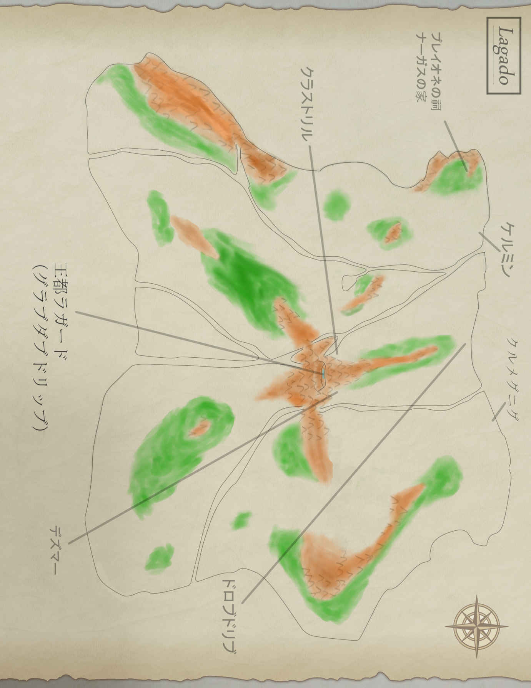

| 天使と悪魔の捧げ物（上巻）: Ｔｏ Ｒｉｂｅａ Ｓｃｒｉｎ | |
| 尾川 漱間 | |
| (2017) | |
【注意】
※ 本作はフィクション であり、架空の物語 です。実在の人物、地域、集団、創作物等の存在とは一切、関係ありません。
※ 参考および引用した書籍・サイト
Project Gutenbergより『Gulliver's Travels』（メイン）
岩波文庫 平井正穂・訳『ガリヴァー旅行記』（確認用）
目次

上巻 『始まりは別れから』
一
眠気を誘う 声音 を持った古典の先生が、《をかし》についてのおさらいをしたあと、枕草子の二三七段目から二四〇段目までを黒板へ書きうつした。
そうして、そこに書かれてある《あはれ》と一一五段目の《あはれなるもの》との共通点、相違点を説明し、源氏物語の《あはれ》や 俳 諧 趣味の 萌芽 なんかを引きあいに出して、語感を説明してくれた。
面白いなぁって思いながら聞いていたけど、他の人たちはそうでも無さそう。先生もそれを察知したのか腕時計を見やってから、
「みなさんはスバルをご覧になったことはありますか？ 清少納言 や 紫式部 が見ていたであろう星空を見るのも《いとあはれ》だし、どこか《をかし》に感じませんか？ ぜひご覧になって、《星はスバル》を味わってみて下さい」
と言うなり、黒板に天体図を書きはじめた。──今日も脱線みたい。
「 牡 牛 座には、アルデバランという一等星があります。始めての人はこれをスバルと勘違いするので注意してくださいね。このアルデバランよりも少し右上、と申しますか...... まぁ、少し離れたところに複数の星が固まっています。それがスバルです。英語ではプレイアデスと言いますね。プレイアデスとは、ギリシャ神話に出てくる七人姉妹、あるいは女神のことですから、興味のある方は調べてみてください。元々、スバルは世界中の文化に顔を出している星でして、漢字のスバルは中国の 昴 に、日本の読み方を当てたものなんですね。──この字、見たことあるでしょう？ 日本語のスバルは《 統 まる》というのが語源とされていて、これは古事記にある──」
やっとチャイムが鳴ってくれた。
先生は残念そうに腕時計を見て、「今日はここまでです」と言い、教材を抱えて教室から出ていった。
古典の先生は面白くて好きなんだけど、いったん話がズレると、際限なくズレるのがちょっと、ね。
とにもかくにも、今日の授業はこれでお 仕 舞 い。まだ正午を過ぎたばかりの時間だ。いつもなら 友 達 である 詩織 たちとご飯を食べに行くんだけど、今日はすぐ自転車 置 場 へ行って《ある場所》を目指した。
風を切ると、 頬 や耳に冷気を感じる。
でも、お 天 道 様がポカポカと陽気を振りまいてもいる。
冬のお昼 時 は暖かいのか寒いのか、よく分からないなぁって、いつも思う。
高校から伸びている、大きな道の先に、川の 堤防 が建っていた。
道からそれる形で堤防を上がって、橋を渡り、少し堤防を走ってから坂道を下りる。それから 中 道 を少し進むと小さな古本屋が見えてきた。ここが目的地。
どこか久々に思えちゃう。お 爺 さんは元気かな？ 今日はちょっと多めに買わなくちゃ。
はやる気持ちを抑えて、戸を横へ引いた。
「お 爺 さん、こんにちは」
レジのところに座っているお 爺 さんが、 頬 笑 みかけてくれた。
白髪で眼鏡を掛けているけど、年寄り臭さが無いって言うのかな？ 背が伸びてて若く見えるのよね。
「ご 無沙汰 しててゴメンね。期末テストがあったから来られなかったの」
「若者は忙しいからのぉ」
「──あれ？」
店の中がいつもと違う気がする。こざっぱりしてるし、本棚の中が寂しいような......
「本、たくさん売れたの？」
「いや、まぁの......」と、お 爺 さんが苦笑った。そして、もうじき店 仕 舞 いをすると言われた。更に追いうちを掛けるように、引っ越しすることになっているとまで言われる。
「すまんのう、 凛 ちゃん。実は前々から決めておったんじゃよ。 儂 も年じゃからの......」
「でも、そんな...... どうして教えてくれなかったの？」
「伝えるのがつらくての...... 凛ちゃんは孫娘みたいなもんじゃし、会えんようになるのは寂しくて」
こんなこと言われたら泣きそうになっちゃうよ...... とにかく涙腺をしっかり締めて、「いつ、引っ越ししちゃうの？」と尋ねた。
「ほとんど荷造りが終わっておるから、来週中には......」と言うから、あたしはこれから毎日きて、引っ越しのお手伝いをするって言った。ありがた迷惑だったかな、と思ったけど、お 爺 さんがすごく 嬉 しそうにお礼を言ってくれたからホッとした。
「おお、そうじゃそうじゃ。凛ちゃんに渡す物があるんじゃよ」
お 爺 さんが身をかがめ、レジ代の上に古本を乗せてゆく。全部で一〇冊はあった。
「これは？」と首をかしげる。
お 爺 さんは 頬 笑 んで、
「五冊は 儂 のお勧めで、あとの五冊はとっておきの一品じゃ。お金に困ったら売りなさい」
「えぇ!? で、でも、あたし......！」
「 儂 が持っておっても仕方ないからの、遠慮はいらん。それに凛ちゃんはお得意様じゃ。最後くらいは大サービスせんとのぉ」
お 爺 さんはそう言って一冊、一冊、説明しながら見せてくれた。
「これ、知ってる。エンデさんの本だよね？」
「さすがに知っておるの。 儂 は、この人の本が好きでな。ドイツへ旅行しに行ったとき、ついでにお墓も見てきたんじゃ。本をあしらった彼らしい墓じゃったよ」
「へぇ～、お墓が本って面白いかも。──この本もエンデさん？」
一番下にあった、ビニールで包装された本を手に取った。革製の重厚な本で、ヨーロッパの古い図書館にありそうな風格を漂わせている。
「いや、それは違う人の本でな。若い頃にアイルランドへ行って、そのとき 買 うた古本なんじゃ」
表紙には筆記体の英字で《Ｔｏ Ｒｉｂｅａ Ｓｃｒｉｎ》と書いてある。
「トゥ リベア...... スクライン......？」
お 爺 さんが「そうじゃ」と、うなずいてくれた。
「かなり安かったから、つい 買 うてしもうての。──あとは、そうじゃな。色々とワケありらしくて、それで買ったんじゃ」
「えっ？ どういうこと？」
「凛ちゃんはギガス写本を知っとるかな？」
「ううん、初耳」
「 一三世紀頃に書かれた世界最大の聖書写本でな。高さが九〇センチ、重さが七〇キロ以上ある、名前どおりの本なんじゃが...... そっちの特徴より、もう一つ別の特徴の方が有名での」
「別の特徴......？」
「聖書なのに特大の悪魔が 描 かれとるんじゃよ。──まぁ、ギガス写本は歴史的、文化的な価値があるから、それでも有名にはなるんじゃが...... 普通だったら 忌 みきらうじゃろ？」
「うん...... だってクトゥルフ神話に出てくる本みたいで怖いもん」
「フォッフォッフォッ。そう言われると少々あげにくいの」
「ま、まさか......」と、本へ目線を落とす。「これ、そっち系の本？」
「安心しなさい。 儂 はウン十年も所持しておった上、つい数年前に読みなおしたのに、こうして生きとるじゃろう？」
「そう、だけど......」──やっぱり怖いものは怖いわけで。
「とある王国を再建するという伝記なんじゃが、割に面白くての。好みを無視するようで悪いんじゃが、あえて入れさせてもらったよ」
「本文は外国語？」
「簡単な英語じゃ、心配いらんよ。それに、このあいだは平家物語や春雨物語を読んだんじゃ。今度は英文に挑戦してみるのも悪くないんじゃないかな？」
「うん...... でも英語はちょっと分からないかなぁ...... 不得意科目だし......」
「心配せんでも大丈夫じゃ。凛ちゃんなら読みとおせるよ」
「──もし、悪魔とか幽霊とかに 呪 われたらどうしよう？」
「十字架や 御 札 でも見せてやれば、すぐ退散するじゃろう。いればの話、じゃがの」
そりゃまぁ、本当にいたら世の中がメチャクチャになっちゃうわけで──なんて思っていたら、お 爺 さんがこちらの心中を察したのか、「もし悪魔がいると仮定して、無条件に人々をおとしめておったら...... 悪いことをする相手がおらんようになってしまうじゃろう？ そうなったら最後、 呪 う相手を探して宇宙へ旅立たんといかん」なんて言ってた。
悪さをするために地球をたつって、壮大なようで 滑稽 なようで...... とにかく、あたしは苦笑いを浮かべて、「ねぇ、お 爺 さん」と、改めて呼びかけた。
「これ、伝記本だよね？ どうして悪魔関連の本になっちゃったの？ 何かいわくがあるとか？」
「ふむ。その本を売っておった主人が言うに...... 《ここまで豪華な装丁と上質な紙が使われている伝記は珍しい。まるで棚を飾りつけるために作られたような本だ。私は出来心で買い取ってしまったが、後悔しているよ。あのときはどうかしていた。売れそうに無いこの本を仕入れてしまうなんてね。間違いなく、本に住まう悪魔が私にささやいてきたんだ。──こんな私に、救いの手を差し伸べる気はないか？ 今なら安くしておくよ？》とか言うもんじゃからの...... ついつい 買 うてしまったんじゃ」
「え？ それ、ひょっとして～......」
「主人の意見はともかく、 儂 は買ってよかったと思えた本じゃ。もちろん、凛ちゃんにも楽しんでもらえるはずじゃよ」
お 爺 さんがいたずらっぽく笑ってこう言った。あたしは、な～んだって思いながら 安堵 する一方、怖がったのを恥ずかしく思い、「そういうのは先に言ってよ～」と、唇を尖らせた。
二
あっという間に六日が過ぎさった。
学校へ行く途中、あたしは古本屋の前で自転車を止めた。
お 爺 さんは、もういない。
蝉 の抜け殻みたいに、シャッターの下りたお店だけが残されていた。
こんな気持ちになるなら、帰り際に立ちよれば良かった...... と軽く後悔してから、最短の通学路に古本屋があるんだから、どうにも 出来ないと諦めつつペダルをこいだ。
正午すぎまで授業を受ける。今日の締めは数学だった。その数学の教科書を 鞄 へ放りこむと、友達の 詩織 に声を 掛けられる。彼女は隣に立っていた。
「どうする？」と、あたし。
「食べに行こっか。どうせだし、 真 輔 君と 晃太郎 も連れていきましょうよ」
あたしは教室を見渡した。
真輔君とは同じクラスなんだけど、彼の姿は、もうどこにも無かった。そういえば最近、真輔君はすぐ教室からいなくなっちゃう。前までは、部活があるときでも一声かけてくれたのに......
「どうかした？」
「ううん、なんでも無い。行きましょ」
二人で自転車置き場を経由し、正門までやってきた。いくつかのグループが 屯 していたけど、晃太郎君が手を挙げてくれたから、すぐに見つけることが 出来た。
「お待たせ」と、詩織が晃太郎君のそばへ寄る。
どことなく二人の距離が近いのは、付きあって一ヶ月だからに他ならない。実は高一のときから仲は良かったけれど、互いにもう一歩、踏みだせない感じだったから、あたしと真輔君が協力してお 膳 立てをした。そのときから本格的に四人で遊んだりするようになったんだけど...... 困ったことに、今度はあたしが大変になっちゃったの。大変って言うのは、そう...... 真輔君を好きになったみたい、あたしが。
「どうした？」って首をかしげる真輔君。あたしは 出来るかぎり 平静 を 装 って、「お昼、どこに行く？」と尋ねかえす。真輔君は「そうだなぁ」と言って、両腕を組んだ。
「やっぱ、いつもの店でいいんじゃね？」
「そうだな」と、晃太郎君が賛同する。
「じゃ、行きましょ」
詩織がそう言って自転車にまたがる。晃太郎君も真輔君も自転車を走らせた。あたしも慌ててペダルをこぐ。
真輔君と晃太郎君は部活をしているから、部活があるときは学食で済ませるんだけど、そうじゃないときは、いつも近場にある軽食店で食べていた。値段も安いし味もそこそこのお店だ。
あたしたちは窓際のテーブルに案内された。そして、メニュー表を見ながら店員さんに注文をして、運ばれてきた料理を食べながら色んな話をした。
校門前からモヤモヤしていたあたしの気持ちは、話が進むにつれ、スッと晴れてしまう。きっと、普段どおりの真輔君と会話できたからだ。早く自分の思いを伝えたい反面、もし、それで今までの関係が壊れちゃったら...... そう思うと、中々気持ちを伝えにくい。詩織もこんなモヤモヤを抱えて過ごしてきたんだろうなぁ......
そんなことを思っていると、お開きの時間となっていた。
店から出たあたしたちは、自転車の 錠 を 外 して、少しおしゃべりしてから 帰路 についた。
詩織は当然、晃太郎君と帰るので、あたしは真輔君と一緒に帰るのが常だった。常だったのに、最近はそうでも無くなっている。──やっぱり嫌われているのかな？ って考えた矢先、真輔君が途中まで一緒に帰ろうって誘ってくれた。心 躍 るあたしは、その喜びを表に出さないようにして、詩織と晃太郎君を見送ってから真輔君と堤防の方へ向かった。
真輔君の家は川向こうにある小さな神社の真向かいにあった。一方、あたしの家も川向こうにあって、神社からそう遠く無いところにある。それぞれの家は丁度、古本屋を 境 に分かれているような感じだったから、いつも古本屋の前で別れていた。
「──あれ？」と、真輔君が自転車を止める。あたしも遅れて自転車を止めた。真輔君は近くにある古本屋を眺めている。
「どうかしたの？」
「ここの本屋、 一昨日 から開いてないんだよ。もしかして潰れたのかなって」
あたしは答えようと開いていた口を閉じた。それを見ていた真輔君が、「どうした？」と言ってから、「あっ、お気に入りの古本屋ってここだったのか？」と、きいてくる。
「うん、そうなの...... つい最近、引っ越しちゃって......」
「悪い。知らなかったから......」と 頬 をかいていた。
「ううん、いいの。ちゃんとお別れの挨拶もしたし、たくさん本をもらったから。そのお陰で寂しさもまぎれてるし......」
「本ねぇ......」と、真輔君が苦笑った。なんだか意味深に感じたから、「どうして？」と尋ねてみる。
「いや、なんでも無い。本の読みすぎには注意しろよ？ じゃ、またな」
真輔君はそう言って片手を挙げ、行ってしまった。あたしが「また明日」と言ったときには、すでに真輔君の自転車が走りだしているところだった。なんとも言えない距離感を覚えつつ、深く考えないでおこうと思った。考えれば必ず 憂鬱 になる。ただでさえ相談相手のお 爺 さんがいなくなったのに、ここで 憂 いることになったらズルズルと嫌な気持ちを引きずっちゃいそうだし......
三
「ただいま～」
靴を脱ぎつつこう言うと、近くにあるリビングの扉が開いて、お姉ちゃんが出てきた。
「お帰り。あんたに頼まれてた段ボール、部屋に入れてあるからね」
「うん、ありがとう」
「部屋はもう片付いてるんでしょ？」
「うん」と立ちあがるあたし。「あとは小物とかを段ボールに入れるだけかな」
「全部、捨てちゃえば？ 中学の物なんか使うこと無いと思うわよ？」
「勉強の復習に使うのもあるし、文化祭とかで作った物は置いておきたいもん。せっかくの思い出なんだし......」
「そのうち思いだすことも、その暇も無くなるわよ。――ところで、今日はお鍋にするけど何がいい？」
「お鍋？」
「夕飯よ、夕飯」
「まだ決めてないの？」
「だって、夕方前じゃない。それにお鍋だったら、ダシ汁に具を入れておくだけで済むし」
あたしはそれ以上なにも触れず、「なんでもいい、お姉ちゃんに任せる」って言った。案の状、姉は 溜 息 をつきながら「あんたもそう言うのね」と 愚痴 って、リビングへ引っこんだ。──やっぱりね。決めた途端、あたしに具材を買ってこさせる作戦だったんだ。
姉の追撃を避けるため、さっさと二階の自室へ向かった。そして服を着替えて机の前へ行き、そばに置いてあった段ボールへ、小物や古いノートなんかを収めていった。
「これで良し。ようやくスッキリした」
あとはクローゼットに仕 舞 うだけね。それにしても中学校時代の教科書とかって、思ったより多くあったんだなぁ。そりゃ、本棚のスペースが無くなるよね。
あたしはようやく作業から解放された喜びをかみ締めながら、ベッドへ寝ころび、お 爺 さんからもらったエンデの本を手に取った。──あっ、そういえば読みおえてたんだっけ。
「結構、すぐに読んじゃうなぁ......」
だから次の本はゆっくり読もうと心に決めて、ベッドから足を垂らした。それから本棚の前に立ち、次は何を読もうかなって考えながら背表紙へ目配せする。と、シェイクスピアの本の隣にある、ビニールで包装された革製の本...... Ｔｏ Ｒｉｂｅａ Ｓｃｒｉｎ が目に付いた。
とりあえず、ビニールくらいは取っておこうかな。
あたしは持っていたエンデの本と入れちがいに、 Ｔｏ Ｒｉｂｅａ Ｓｃｒｉｎ を取りだした。それから机の椅子へ腰 掛けて、ビニール包装の閉じ口を慎重にあけつつ中に入っていた本を取りだした。
相変わらず、重厚でズッシリとした本だなぁ。ページ数はそこまで多く無さそうだけど、革の 装 丁 と中の紙が厚いせいか、実際よりも量があるように感じる。
革表紙を眺めていたら、どんな内容なのか気になってきた。お 爺 さんの話では Ｒｉｂｅａ Ｓｃｒｉｎ って人にまつわる伝記本らしいけど...... うん、やっぱり気になってきちゃった。
「本当に簡単な英語だったら、頑張って読んでみようかなぁ......」
あたしは何気なく本を開いた。続いて見返しのところも開く。次に扉、表題紙と見ていく。別に変わったところは無いみたい。あえて言うなら目次が無いってトコくらいかも。
なんとなく紙の表面を擦ってみる。上質な紙だからツルツルしていて、触り心地が抜群に良かった。もう少し、ページをめくってみようかな。
厚い紙をめくると、地図が載っているページに出くわした。ザッと目を通してみる。地図はラガード島という大きな島を中心に、マロナダ国とかラグナグ国とかルヌーン国とか、そういう国名が印字されている大陸があった。
聞いたことも無い国名だからスマホで調べてみる。予想どおり、こんな国名なんて存在しなかった。伝記の 体 裁 を取った物語かな？
更にページをめくってみる。ラガードと呼ばれる場所の地図が載っていて、次のページには登場人物の紹介がある。この時点で、創作系の伝記物語なんだろうなぁって察しが付くんだけど...... なぜか、人物の絵も無ければ紹介文も無い。──どういうこと？
あたしは困惑しながら次のページへと進んだ。すると、本文が全く無かった。あれれと思ってページをめくっていく。最後まで白紙だった。
「何コレ......？」
『小娘か』
男の子の声がした。あたしはさほど気にもせず、辺りを見渡す。
──部屋の中にいたはずなのに、いつの間にか森の中にいる。
『おい、てめぇ。聞いてんのか？』
あたしは何がなんだか分からず、迷子が両親を捜すように、キョロキョロと見やった。そこへ舌打ちが飛んできた。
『まだのみ込めてねぇのかよ、このバカは。──おい、ちょっと落ちつけ。それからこっち見ろ』
聞き間違いで無ければ、声は本からしている。しかも、ガラが悪そうだ。あたしは口をあけたまま、持っている本へ視線を落とし、目蓋をパチクリさせる。
何も書かれていなかったはずの白紙のページに文字があった。レンズにゴミが付いているのかと思って眼鏡をズラして見た。――やっぱり文字だ。しかも英文では無い。あたしに 馴 染 みが深い 和 漢 混 合 文 ──現代日本語だった。
「何、これ......？」と言った瞬間、あたしはお 爺 さんの話を思いだした。でも、そんなまさか...... あれは冗談のはずじゃ......
『おい』
「わっ!? 」
驚いたあたしは本を放りなげた。その弾みで尻餅もついた。もう冷静でいられなかったから、両腕を使って頭を覆った。
「ご、ごめんなさい！ ごめんなさい！ あたしみたいなヤツ、 呪 ったって無意味ですって！ だから助けてください！ お願いします！」
泣きそうな声で命 乞 いをしていたら、 苛 ついたような 溜 息 が聞こえてきた。
『いい加減、黙って顔上げろブスが。こっちは我慢して 面 おがんでやってんだぞ......』
ブス？ 今、ブスって言った？ あたしは心に渦巻く色んな感情をなんとか抑え、顔を上げる。すると森では無く自室となっていた。そばには閉じている本があった。
『たかだか本がしゃべったくらいで、そこまでビビるなよ』
「だ、だって...... 悪魔なんでしょ？」
『悪魔じゃねぇが、そっちとお近付きなのは確かだ』と笑いだした。
「何も...... しないよね？」
『よく見りゃ分かるだろ、俺は本だぞ？ 正確には使い魔だ。別に人を殺して 混 沌 を得たがるタイプじゃねぇよ。それくらい察しろバカが』
「あ、悪魔のクセに何よ、その口のきき方！」
『使い魔だって言ったのが聞こえてねぇのか、テメェは』
何？ なんなの？ 悪魔の使い魔ってこんなに口が悪いものなの？ あたしは我慢できずに、そのことを強く言ってやった。すると『悪魔で紳士とか、単なるド変態じゃねぇか。テメェはホント、バカだな』と、薄らわらいされた。──ウザイんですけど。
『何はともあれ、これで文字が取りもどせるな。この調子でガンガン取りもどせ』
「は？ 取りもどす？」と言ってからすぐに、バカ扱いされるんじゃと思った。それで、「なんで本文が白紙なわけ？ 悪さのし過ぎで、神様に文字を取りあげられたの？」と言ってやる。
『だったら悪魔のことが記述されてる本は全て、消えてなくなるだろうが。人間自身が 焚書 するのは別だがな。とにかく頭使えよ、頭を』
「どのみちバカにするんだ......」
『当たり前だろ？』
「もういい。ずっと白紙のままでいなさい」
『そうなると困るのは、テメェ自身だぜ？』
──はっ？
『テメェが内容を取りもどさないと、家族、友人、知人...... もっと言うなら《テメェが知ってる世界すべて》が不幸になる』
「な、なんで、そんなことになるのよッ！」
『それでもいいんなら、もう何も言わねぇけどな』
話を遮ってきた。──つくづく、嫌なヤツ。
あたしは 颯爽 と立ちあがり、机から十字架のアクセサリーや神社で買ったお守りなんかを取りだして、振りむき様につき出してやった。
「これが目に入らない!? 」
『目には入らねぇだろ』
「小学生みたい......！」
『使い魔とガキは似たモノ同士って、よく言うからな』
「どっちだっていいわよ！」
『それで？ 悪魔と直結する俺に逆らって身を滅ぼす気か？ ん？ 大人しく言うことをきいた方がいいと思うぞ？』
「最低ッ!! 」
『んっん～、心地よい言葉だ。最低と言うヤツは大抵、反抗しきれずにへし折れるしかねぇからな。いわば、難攻不落の城をぶっ潰した気分だ』
そう言ってヘラヘラ笑う使い魔。──正直、こういう現実にいそうなヤツが悪魔に関係してるなんて、腹が立つというよりもガッカリだし幻滅しちゃう。 所 詮 、こいつも飼い犬みたいなものなのね。
『俺はペットと同じ道具に過ぎねぇからな』と、使い魔が見透かしたように言ってきた。『しかし...... 単に人を蹴落とすだけじゃ、そこら辺の優秀な人間と変わらねぇ。悪魔や使い魔は何よりも合理性を 尊 ぶ。 真 なる 商 いはことに、悪魔らしい。気に食わないヤツ、自分を不利に追いこむヤツを片っ端から抹消していく 高 尚 な存在、選ばれし存在と違うのはこういうところなのさ』
「何が言いたいのよ、タコ！」
『 取 引 してやるって言ってんだよ、色白イカ女。ちゃんと俺たちの望みをかなえたら、その対価にテメェの願いを一つだけ、かなえてやる。なんでもいいぞ？』
「悪魔と契約するとでも思ってんの？」
『選択権はテメェにねぇ。しないならテメェは終了だ』
「何が《合理性を尊ぶ》よ！ 公平じゃない時点で合理性の欠片 も無いじゃないッ！」
『何言ってやがる。合理性や論理は、誰がどのように使っても構いやしねぇんだよ。自己正当化を知覚しない無知ほど、合理生や論理を絶対視して尊ぶのさ』
「自分が無知ですって言ってるようなものね？」
『悪魔とその下っ端が、全知全能だと思ってんのか？ ん？ 答えろよ』
「それに近いから、なんでも願いをかなえられるんでしょ？」
『だったら神様お得意の《気まぐれ》で、お前の生き死にを決めてやるよ。こんな取引なんかするわワケねぇだろ。そもそも、運命や宿命に合理性が通用するとでも思ってんのか？』
「だったら、結局は合理性も論理性も無いって言ってるようなもんじゃない！ 矛盾してるわよ！」
『俺の言うことをどう受けとるかは、テメェの自由だ。しかし、何を起こすか は俺たちが決める』
「それのどこが商いだって言うのよ！ 卑 怯 だわッ！」
『自分だけ得をする方向に持っていくために、他人へ少し得を与えてやる。これのどこが商いじゃないって言うんだよ、ボケが』
「どっちにしろ、あたしを 混 沌 に 陥 れて楽しんでるだけじゃない！ 単ある疫病神よ！ あんたが嫌ってるヤツらと何も変わらないわ、こんなのッ！」
『 混 沌 になるかどうかは、本を読むテメェの態度次第だ。それに、いきなり色々やれって言ってるんじゃない。テメェら人間には物事の《順序》ってのが必要だからな...... そうだろ？』
「何が順序よ......！」
「いいか？ ぶっちゃけ、テメェが本の中に入って本の世界をのぞいてりゃいいだけなんだ。あとは全部、俺がやる。これで願いが 叶 うんだから安いもんだろうが』
「使い魔のくせに、そんな力あるの？ 大体、内容がどうとか、文字を取りもどせって...... 文字の一つも書けないような悪魔に、願いをかなえる力があるなんて信じられないけど......」
『確かに、俺には願いをかなえる力がねぇ。だけど俺を飼っている芸術の悪魔なら簡単な話さ。それに芸術の悪魔って言やぁ、その筋じゃ一目おかれる存在なんだぜ？』
「堕落した人たちにってことでしょ？」
『文字に限らせてもらうが、聖典とされている本はなんで 出来てる？ 小説は？ 漫画は？ テメェらが使う手帳やらネットの書きこみやら、自然を分析する数式はどこにどうやって記され、どう伝えられる？ つまりはそう言うこった』
なんか、うまく言いくるめられてる気がする。悪魔の 下僕 って言うくらいだし、口がうまいんだろうけど...... でも、不幸にあうのは嫌だし...... それに、本の中に入るっていうのが気になるし、なんでも願いが 叶 うっていうのも、ちょっぴり惜しい。
「──本の中に入るって、具体的にどういう意味なの？」
『さっき森の中にいたろ？』
「え！ あんな感じで見られるの!? 」
『そうだぜぇ？ いくつかルールはあるが、それさえ守ってりゃなんてこたぁねぇ。それに、不幸もチャラになる上に 取 引 の報酬として願いも一つかなえてやる。だから本を開きな。──記号の世界は矛盾の生成に満ちてんだ。そこに次元は存在しねぇ。あり 体 に言うと、《君が本を 覗 くとき、本もまた君を 覗 いている》ってヤツだ。深呼吸して潜ってみねぇか？ ん？』
胸が高鳴った。
どのみち、あたしが悪魔とか使い魔をやっつけるなんて不可能だ。不可能ならいっそ、ふところに飛びこんで行くしかないかも...... それに、やっぱり本の中を見てみたい。
『決まりだな』って、使い魔が言った。『早く本を開け、ウスノロマ』
「一ついい？」と、目を細めるあたし。「その言い方、やめて頂戴。すごく腹が立つの......！」
『だったら立たないよう寝かせておけ。ほら、さっさとしろ』
あたしは諦めて本を拾いあげた。そして恐る恐る、ゆっくりページを開く。眼前にはさっきと同じ森の光景が広がっていた。
「すごい......」
これが本の中だなんて信じられない。信じられなくても、目の前に森が広がってる。早く受けいれなきゃ......
『まだ時間があるな...... よし、ここいらで諸注意を言っておく。耳かっぽじってよ～く聞けよ？ 二度は言わん』
こう言って、本の使い魔が諸注意──読書の際のルールを語りはじめた。
一、本の中で過ごした時間は、そのまま現実の時間にも影響を及ぼす。ただし逆は無い。つまり、現実で過ごした時間は本に影響を与えないから、読みすぎないようにしろってことね。
二、任意の人や場所、ある程度、先の場面を指定して飛ぶことが 出来る。要するに、いつでも張りつく相手を変えられたり、場面を飛ばせるってことかな？
三、自分で移動する必要は無い。使い魔が本文の書きこみと 共 に、指定している人物を自動追尾する。――良く分からなかったけど、体験すれば一発だって使い魔が言ってた。
四、本の世界に干渉してはならない。
五、向こうから、こちらに干渉することは出来ない。
六、本に傷を付けてはならない。――大切にしろってことね。
七、本の中へは、一人しか入ることが出来ない。
八、一度、取りもどした文字を取りけしたり、前の場面に戻ったりは出来ない。ただし、書きこまれた本文や注釈を読みかえすのは自由。――本だから当然よね。
九、ルールを私物化したり、 崇 めたりしてはならない。──とにかく文字を取りもどすのが先決で、そのための、一番の注意点だって力説してた。でも、微妙に分かりにくい言いまわしだった。とりあえず、一から八のルールを破るなって意味かなぁ......
他にも細々と言われたけど、大切なのはこの九つみたいだから、あたしはテスト直前の追いこみの要領で、ルールを頭の中へ刻みつけた。──よし、大丈夫。念のため、あとで 付箋 に九箇条をメモして、この本へ貼りつけておこうっと。別に汚すわけじゃないし、マズかったらこの本が何か言ってくるはずだし。
「あっ、そうだ。ちょっといい？」
『なんだ？』
「あなたの名前は？」
『名前だァ？』
「もしかして無いとか？」
しばらくしてから、『そうだなぁ...... 俺のことはラプラスと呼んでくれ』
「ラプラスね？ あたしは──」
『いらねぇ、いらねぇ。名前で呼んだりしねぇから』
やっぱりこいつ、ムカツク。
『テメェの名前よりききたいことがある。張りつく相手なんだが誰にしたい？ どうせ三人称だろうが一人称だろうが、誰かの視点にくっ付いて無いと理解できないんだろ？』
「──別にどっちでも読めます」
『じゃあ、全員に張りついて見るか？ 言っとくが、誰が何をしゃべってるのか分からないとか、そんな寝言は言うなよ？』
「どう選べばいいの？ 人物紹介が白紙なのよ？」
『直感で適当に選べって。それでいいだろ？』
「良くない。──じゃあ、リベアって人に張りついて。この本の著者でしょ？」
『そのリベアってヤツが分からねぇからなぁ...... ああ、そうだ。登場人物の 年 齢 なら大体わかるぞ？』
「なんでそこだけ分かるの？」
『そりゃアレだ。早く死にそうなヤツに目を付けてだな──』
「あ～、はいはい、もういいです。年齢だけ教えてください」
ラプラスは舌打ちしつつ、『一回しか言わねぇぞ』と返した。
『 六〇、 五三、 五二、 四六、 三一、 二五、 一九、 一八、 一七...... まっ、多少の抜けはあるが、この辺りが登場人物だろう。リベアってヤツもこの中にいるんじゃねぇか？』
こいつの場合、抜けどころか意図的にリベアって人を外してそうだけど...... でも、張りついて見るなら年が近い方がいいかな。
あたしは、 一八歳か 一七歳がリベアさんだろうって決めつけた。もしハズレていても、六 〇代とか五〇代とかをジッと見てるよりはマシだろうし、 四〇代や 三〇代も正直、見てたくない。男性だと目のやり場に困ることがあるかもしれないし、リベアって絶対に男性の名前だろうし......
「うん、決めた。 一七歳にする」──同じ年だしね。
『本当にそれでいんだな？』
ラプラスが悪魔らしさを 醸 しだすように念を押してくる。だけどあたしは、「うん」って即答してやった。こいつ、調子づかせると面倒なんだもん。
何かしら罵声を浴びせられると覚悟していたけれど、ラプラスは特に何も言わず、『お、喜べ。お姫様に張りつけるぞ』って言ってきた。
「お姫様？」
パッと景色が一変した。
さっきまでは森の道端にいたって感じだったけど、今度は正真正銘、森の中みたい。夕暮れ時なのか、妙に薄暗かった。ザッと見渡した感じからすると、針葉樹が多い。それに広葉樹の葉っぱや草の枯れ具合から冬、もしくは秋の季節だと思った。
「ねぇ、こんなところにお姫様がいるってこと？」
『じきに分かる』
「きき忘れてたけど、この本って官能系じゃないよね？」
『 御所望 とあらば用意いたしますぞ？』
「い、いらない！」
ラプラスが含みわらいしていた。意地が悪いを通りこして意地きたないヤツね...... 文句の一つでも言ってやろうかと考えた矢先、子供の叫び声が聞こえてきた。
「何？ どうしたの？」
『じきにお姫様が来る合図じゃねぇか？』
「まさかスプラッターッ!? ホラーやグロは見ないって決めてるのに！ こんなの最後まで見られるわけ無いでしょッ!! 」
『思いこみ激しいな。だからバカでアホで間抜けなブスになるんだ。怖くて気持ち悪くなるかどうかは、テメェの視聴態度で決まるんだ』
「文字を取りもどしたら、真っ先に焼却炉へ放りこんであげる......！」
『いいよ、いいよ、そういう憎しみ方。俺は嫌いじゃないね』
心底、腹立だしいヤツね......！ 本を見るのに、どうしてこんなにイライラしなきゃいけないのかしら。
『お、来た来た』
ラプラスの声に釣られて前を見る。子供が必死に走っていた。服装からしていかにもって感じ。だけど同じ年には見えない。どう見ても......
「小学生じゃない。幼児体型の 17 歳、なんて言わないでしょうね？」
『なんだ？ 同性の子供が好みなのか？』
「ちゃんと答えないなら本を閉じるから......！」
『まぁ、とりあえず見ておけよ。もしかすると面白いことになるかもしれねぇしな』
「面白いこと？」
不意に、犬があたしの足下を貫通して子供の方へ走っていった。──ううん、 狼 だわ。 狼 たちが木を背にしてるお姫様を取りかこんでる。
「ね、ねぇ...... マズくない？」
『構わねぇさ。何人不幸になろうが死のうが、 所 詮 は本の中だ』
「それでも平気な人とダメな人がいるってことは忘れないで欲しいんだけど......！」
『バカが。嫌なら見なきゃいいんだよ。特殊な表現媒体や当てつけで無理やりってのは別として、本に限って言えば読む読まないは個人の勝手だ。音楽と 煙 みてぇに迷惑を振りまく代物じゃねぇのさ』
「──あっ！」と、あたしは無視するように指差して言った。
たくましい男性が立っている。モジャモジャの髪にヒゲ 面 だから、パッと見、二足歩行するライオンに見える。
「助けてッ！」と、子供が叫んだ。
男の人は目にも止まらぬ早業で、 狼 の足下へ一発、弾丸を撃ちこんでいた。
「子供なんざ──」と言った途端、 狼 たちが四方へ散り 散 りに去った。
男の人が首を軽く振りながら、子供の近くへ寄っていく。──と、子供が大泣きしはじめた。
安心すると泣いちゃうものよね。
「貴族だな」って、男の人がつぶやいた。そうして大きな 咳 払いをし、「泣きやまねぇと放っていくぞ？」だなんて、脅していた。女の子はしゃくりながら、なんとか泣くのをこらえている。そのすがたが痛々しい。他にも言い方があったでしょうに、って思っていたら、話が進んで自己紹介し合っていた。
男の人はナーガス、女の子はルシーラで、愛称をルーシーと言うらしい。
本の人物紹介へ目をやると、そこにはすでに二人の名前と紹介文が載っていた。──なるほど、取りもどすってこういうことね。
あたしは早速、紹介文を黙読してみた。それによるとルーシーはラガード人で、マロナダ・バルニバービ連合国とかいう国の、国王の次女...... と書いてある。正直、なんのことだか分からないから思いきってラプラスに尋ねてみた。
『人物紹介の前に、地図が付いてたろうが』
そう言えばあったような。
『この本の中で使われる主な地名や国名だから覚えてろ。あと、本の後ろ側には何があるって言ったか覚えてるだろうな？』
「はいはい、分かってます分かってます」
あたしは注釈のページを開いた。
そこにはラガードのことと、ラグナグって言う国のことが書いてある。
ラガードはいいとして、ラグナグって言うのはきっとナーガスさんの母国ね。紹介文に《ラグナグ人》って書いてあったもん。
でも、《その筋では有名な盗賊》って文章もあったから、ちょっぴりルーシーちゃんのことが心配ね。それに、どうして危険な森の中に一人でいたのかも気になるなぁ...... 一体、何があったんだろう。
そう思いながら、あたしは目線を前方へ戻した。するといつの間にか、小高い山のそばにある、 一 軒 家 の前に立っていた。ナーガスさんがルーシーを家の中へ導いてるから、ここがナーガスさんの家なのかも。あたしの世界だったら通報確定の状況だけどね。
そのうち、ランタンを持ったナーガスさんが家から出てきた。それを見てようやく、周りが暗くなっていることに気付く。
ナーガスさんは一直線に馬小屋へ行き、荷車を引いた馬とは違うタイプの馬に乗って、どこかへ出発した。
「どこへ行くのかしら？ ルーシーって子は、どうしてこの森に......？」
『本文を見返しゃ分かるだろ、ボケが』
ラプラスの罵声を右から左へ流しつつ、あたしは前のページを見返して、状況を自分なりに整理してみる。──ルーシーちゃんはケルミンって言う 港 町に家臣といて、そこを武装集団に襲われた。けれど、家臣や警備隊の助けで森の中まで逃げてきた...... とまぁ、こんな流れみたい。
『どうする？』と、急にラプラスが言った。『あの男のあとを追いかけるか？ それともガキの子守でもしてるか？』
ルーシーちゃんが気になるけど、早く内容を把握したいから「ナーガスさんを追って」と伝える。
馬の 手 綱 を持ち、枯れた草原を疾走するナーガスさんが現れた。彼の移動に会わせてあたしの足下がヌルヌルと動き、景観もどんどん流れていく。楽だし面白いけど、駅にある動く歩道──ムーヴィング・ウォークみたいで、ちょっと落ちつかないかも。第一、止まったときに慣性が働きそうで怖い。
ナーガスさんが、どこかの村か集落みたいなところに到着する。そうして真っすぐに、雑貨屋みたいなところへ入った。店内には変わった物がたくさんあって、そっちに気が行きがちだけど、今はナーガスさんと店主の話に耳を傾けなくっちゃ。
店主が店の奥に引っこんで、十数分が経過した。電報を打ってるみたいね。
ナーガスさんは落ちつきなく、人差し指でカウンターをたたいている。あたしは立ちつかれちゃったから、三角すわりして足を休めた。
それから程無くして、店主が出てくる。血相を変えていた。二人の話を横で聞いているうちに、あたしも胸の鼓動が高鳴った。クーデターが起こったみたい。
店主にお礼を言ったナーガスさんが、足早に馬の 鞍 へまたがって家路をいそいだ。彼の表情は変わらず険しいままだ。あたしもようやくことの重大さを感じとった。何せ、ルーシーちゃんは王様の次女...... もしかして、もしかすると......
『ちょっといいかな～？』
緊張感の 欠片 も無いしゃべり方で、ラプラスが呼びかけてきた。あたしは眉をひそめ、「何？」と尋ねる。
『かれこれ一、二時間はたってるが...... 現実世界の方は大丈夫なのか？』
「へ？」
『まさかとは思うが...... 最初に言った諸注意、忘れたんじゃねぇだろうな？』
「覚えてるわよ」
『じゃあ思いだせ。そして今の時間を確認しておけ。面倒なことになって読書時間を削られたらかなわねぇよ』
あたしはブツクサと文句を垂れながら、スマホを取ろうとポケットをまさぐる。
「あ...... 机の上に置いたんだっけ......」
『本を閉じりゃ元の世界だ。閉じてるあいだ、ここの時間は進まない。俺が意図的に進めない限りはな』
「いきなり最後まですっ飛ばす気でしょ？」
『それが 出来れば、テメェを使って文字や内容を取りもどすわけねぇだろ、 阿 呆 が。ちょっとは頭使え』
面倒くさいから返事せず、本をパタリと閉じる。ほぼ同時に、あたしは自室の中央に立っていた。今更だけど、これが現実だなんて信じられない。
あたしは本をベッドへ放りなげて、机の上からスマホを取りあげた。外は暗くなってるけど、時刻はまだ十七時過ぎだった。後ろでゴチャゴチャと、うるさいのがしゃべってるから、休憩がてら一階へ行こうかな。
階段を下りている最中、詩織からラインが来たので返信する。間を置かずに返事が来た。
──真輔君とは一緒に帰っただけで、何も進展は無いって送りかえす。これが《付きあうことになりました》だったら、詩織が家に押しかけてくるだろうなぁ。それで、あたしは嬉し恥ずかしの報告を──......
悲しくなるから妄想はここまでにする。でも、早く気持ちを伝えたいな。そして早く楽になりたい......
「何、 辛 気 くさい顔してるの？」
お姉ちゃんが台所に立っていた。あたしは 呆 けたまま、リビングへ入ってたみたい。
とにかく苦笑って、眼鏡のフレームを触りながら「なんでも無い」って答えた。お姉ちゃんは「フ～ン」と言って、視線をまな板へ戻した。
それからあたしは、リビングにあるパソコンを触ってから夕飯を作るお姉ちゃんやお母さんの手伝いをし、帰ってきたお父さんと一緒に夕飯を取った。そのあと、お風呂に入ったあたしはパジャマ姿で二階の自室へと戻った。
さぁて、本を読もう。
本棚の前に立つと『浮気か？』って声がした。そこであたしは、ラプラスの存在を思いだした。
「ご、ごめん。すっかり忘れてた......」
『テメェはスッカラカンだから、俺の存在を忘れても仕方ない。ただ、文字と内容をどうにかするってことだけは忘れるなよ？ 本の中の小娘みたく、独りぼっちになるぞ？』
「やっぱり、そうなんだ......」
予想はしてたけど、やっぱりそういう流れになっちゃったんだ。
『テメェはまだ大丈夫だから安心しろ。ほれ、さっさと本を開け』
本の中って言われても、あんなに生々しくリアルに物事を見せられたら、想像の世界だなんて思えなくなってくるなぁ......
『辛気くさい 面 しやがって...... 今日はやめておくか？』
「ううん、もうちょっとだけ見る」
なんだかんだ言ってもルーシーちゃんが気になる。
『じゃ、本を開け』
あたしはベッドにあった本を拾いあげた。
四
「あれ？」
どういうわけか、あたしは例の一軒家──小高い山のそばに建っている、ナーガスさんの家の前に立っていた。もっと言うなら朝日が降りそそぐ、裏庭っぽいところにいて、近くには小さな滝があった。小鳥の声も聞こえてくる。
『詳細は本文を見ろ』
ラプラスが笑いをこらえるようにして言ってきた。な～んか嫌な予感がする。そう思って本文へ目を通すと次の文章が追加されていた。
《──一七四〇年。一部の軍部とヤフー人の結社であるトリブニアが手を組み、クーデターが 勃 発 。軍部を統べていたフイヌムと結社の 長 であるウィスフートによって、王族関係者とその貴族が殺害される。
その 後 、バルニバービ改めラングデン帝国の建国を宣言。
連合関係にあり、長きに渡ってラガード島を支配していたマロナダ国との交流を断絶し、新たにウィスフートとフイヌム両氏の祖国、ルヌーンと同盟を結ぶ。
かくしてウィスフートが皇帝となり、ラガード島は旧時代のごとく混迷期へと入った》
「ちょ......！ ちょっとォ～ッ!! 何よコレェ～!? 」
『ご希望は一七だろ？ だから頑張って、バッサリ切ってみました。どうだ？ 清 々 しい気分だろ？ かなり苦労したんだぜ？』
「あそこをすっ飛ばすとか、正気とは思えないんですけど!? 」
『使い魔だからなぁ～。狂気は大好物だぜ？』
「最低ッ！ 最悪ッ！ 使い魔として恥ずかしくないのッ!? 」
『もっともっと 罵 ってくれ。心に染みいるからなぁ......』
うわっ、コイツ本気でキモイ。
『おっ、出てきたぞ。例のお姫様だ』
あたしは振りかえって家の方を見やった。すると、勝手口から 桶 を両手に持った少女が出てくる。あたしにはそれが、ルーシーちゃんだと一目で分かった。あんなに小さかった女の子が、あたしの身長よりも少し高いくらいになっていることに驚いた。
服装は村人っぽい感じで見すぼらしいし、ショートヘアのズボン姿だから女の子っぽくないけれど、気品があって、漂う雰囲気にたくましさがある。大泣きしていたお姫様とは思えない。何よりも──......
「無事だったんだ...... 良かった」
『親指姫みたく、あのオッサンと無理やり結婚させられたんだろうな......』
「美女と野獣って言いなさいよ。それに、あの人はそんなタイプに見えない」
『始まったよ、実はあてにもならねぇ女の 勘 が......』
「ちょっと黙ってて」
ラプラスを叱っているあいだに、ルーシーが 滝 壺 の前まで来ていた。彼女は持っていた 桶 で水をくみ取っている。それが終わると、自分の手に息を吹きかけていた。よく見ると、木陰の草に霜が降りている。池に氷が張っていないのは滝のせいだったのかと納得し、改めて、この世界が冬の季節なんだと実感した。
そこへ突然、破裂音が飛びこんでくる。続けて二発目、三発目も聞こえてくる。ここで初めて銃声だと気付いた。
ルーシーへ目をやる。身を低くして、周囲の気配を伺いながら、駆け足で家の中へ戻っていた。そうして台所の近くに置いてあった腰 鞄 を付けて、また外へ出た。よく見ると、腰 鞄 にはリボルバーっぽい銃が納められている。何をするんだろうと心配に思いつつ見ていたら、滝のそばへ行き、急な斜面をのぼりはじめた。きっと銃声の真意を確認しに行ったに違いない。本文を見返すと、その通りのことが書かれてあった。
身軽に頂上までのぼったルーシーが、斜面から顔だけをのぞかせて、頂上にいる人々を眺めだす。
（あいつら、帝国軍......？）とつぶやいて、顔をしかめていた。
そういえば、クーデターのせいで帝国になってたんだっけ。あたしは本の注釈に追加されていた、ルヌーン国、ヤフー人、ラングデン帝国と、帝国の前身となった結社、トリブニアの項を見ながらそう思った。
もしかすると、この Ｒｉｂｅａ Ｓｃｒｉｎ という人は帝国を打ちたおす人なのかもしれない。なんだか、そんな気がする。そのことをラプラスにきいてみようっ思ったら、突然、辺りが光に包まれる。あたしはビックリして思わず本を落とした。幸い、本は開いたまま地面にあった。
「ご、ごめんなさい」
『早く拾えよ 雌 豚 』
踏んづけてやろうかしら？
でも、今はそれどころじゃない。あの 閃 光 がなんだったのかって考える暇も無く、次は煙幕が視界いっぱいに広がっていた。
「何？ どうなってんの？」
『だから本文を見返せ、本文を』
罵声に反応する余裕も無いから、さっさと本を拾いあげてページを戻した。ルーシーが兵士の見つけた物をブンどってるみたい。ホッとした反面、ナーガスさんに仕込まれたのかと思って心配になってきた。
煙幕が晴れると、気を失っている兵士たちが倒れていた。ルーシーは両手を払いつつ、「一丁あがり」と言っている。その姿が、なんだか 凜 々 しい。
彼女は兵士の握っていた拳をほどき、何かを拾いあげていた。ビー玉かな？ とにかく青色のガラス玉みたい。
あたしと同じようにルーシーも、 怪訝 な顔でガラス玉を見ていた。
「洞窟の中にあったのかしら？」と、暗い洞窟を見ている。
「まっ、いいか」
ルーシーが布切れを地面に置いていた。
あの布切れってなんだろう？ と思って、本文へ目をやる。──なるほど、 狼 が嫌うにおいを染みこませた物なのね。
山を滑るように下りたルーシーが、放置してあった 桶 を回収しながら家の中へ入り、その場で一息ついた。
「どこへ行ってたんだ？」
ナーガスさんだ。食卓の椅子に座っている。
さすがのルーシーも驚いたみたいで、「ナーガスこそ仕事は？」って、驚いたことを隠すように尋ねていた。
「なぜか帝国の軍人がわんさかといてな。依頼人と話しあって延期することにしたんだ」
「何かあったの？」
「あったんだろうなぁ...... 年頃の娘盗賊が出没したのかもしれねぇ」
あらら、ナーガスさんに筒抜けだったみたい。
ルーシーは観念して青い玉──帝国兵から奪ったビー玉みたいな物──をナーガスさんへ投げわたした。
ナーガスさんは玉をジロジロ見ている。そのあいだ、ルーシーが入手の経緯を説明し、洞窟には何があるのかって、ナーガスさんへ質問した。すると、ナーガスさんは「い～んや」と否定し、「旧時代の小さな小さな史跡ってだけで、特に何も無いはずだ。それにお前さんと知りあうずっと前、何回か調べたこともあったが...... 祠 以外、な～んにも無かったな」
「じゃあ、どうしてこんな汚いガラス玉で兵士たちが喜んだの？」
「こいつが単なるガラス玉じゃないからだろ」
「私には 骨 董 品 のガラス玉にしか見えないんだけど」
「調べてみるか？」
ナーガスさんがこう言ったから、謎の青い玉を調べることになったみたい。
そもそも、ここにいたら兵隊が押しかけてくるかもしれないし、それだったら調査がてら家から離れた方が安全だもんね。──なんだか、伝記というより冒険っぽくなってきちゃった。
ルーシーとナーガスさんは色々と 身支度 してから、馬にまたがった。そしてデフル村というところで一泊してから、ケルミンって言う港町へ行くことした。──デフル村は、ナーガスさんがクーデター 勃発 を知った場所だし、ルーシーも当然、それを知っているだろうから、どんな気持ちで村へ入るんだろうって気にしながら見てたけど、案外、普通だった。もうあのときの悲しみやトラウマを乗り越えてるみたいね。──そう言えば、あれからどれほどの時間がたったんだろう。
あたしは気になって本文を最初から見直した。すると、八年の歳月が流れていて、ルーシーは九歳から 一七歳になっていることが分かった。
「九歳と 一七歳って、八年の違いしかないんだなぁ......」
『ガキの八年と老人の八年を一緒にするな。それに、テメェもあと八年でババアだろうが』
「二五歳で老境とか、時代の感覚に合ってないと思うんですけど？」
『な～にが時代だよ。そんなモンを意識するヤツは、その時点で自分の 庇 護 に入ってやがる。そうなったら老人だ。老人は色々と自分に関わることを正当化しやがるからな』
「そりゃ、若者と対立する存在だもん。大体、子供の方が自分を正当化するでしょうに......」
『逆だ。老人も若者だったし、若者も必ず老人になるから対立しちまうのさ。生まれてこの方、老人のままなら、単純な種別分類の区別をしてハイ終わりだろうが。対立は違いの衝突から生まれる。それを 一 括 りにして、分かったつもりになるためのモンが世代って分類法なのさ』
「悪魔の使いっ走りが多弁に熱くかたっても、全ッ然、説得力ないんだけど？」
『説得力の問題じゃねぇ、テメェが人間なのが問題なのさ。俺たちのあいだに説得なんか必要ねぇからな』
これ以上は無駄ね。あたしはハイハイって流して、ルーシーたちの状況を確認する。二人とも宿屋で部屋を取っているところだった。
何かあるのかなって期待して見ていたけど、そのまま夕食を取りに行って世間話をし、明日に 備 えて眠るような流れになったから、あたしも本を閉じて眠ることにした。
五
Ｔｏ Ｒｉｂｅａ Ｓｃｒｉｎ 伝記を読みはじめて三日がたった。
三日もあれば、大抵は半分くらい読みおえてるものだろうけど、実は、あんまり進んでいない。
その原因は、詩織や真輔君と遊んでたって言うのもあるけど、一々、ルーシーたちとの時間を共有しなくちゃならないって言うのが、あまり先に進まない大きな原因の一つだった。もちろん、あの口の悪い使い魔も大きな原因の一つだけど......
明日は終業式だし、詩織たちと遊ぶ約束をしているから、今日はお昼ご飯を食べたらすぐに本読みに取りかかろうと思う。
授業が終わってすぐ、あたしは帰宅コースを自転車で走りながら、昨日まで見た内容を頭の中でおさらいした。
初日は、デフル村って言うところまで一気に見たっけ。そこからルーシーたちはケルミンの港町へ行って、知りあいの 骨 董 商 に青い玉──帝国の兵士から奪った、謎のビー玉もどきを鑑定してもらったんだっけ。
結局ほとんど何も分からなかったから、今度はナーガスさんの提案で、クラストリルって町にいる情報屋から、帝国がどうしてあの玉を集めているのか、きくことにしたんだったかな。
えっと、それでクラストリルが大きな川を逆のぼったところにあるから、二人で蒸気船に乗って...... そう、無事に情報屋のところに着いたんだった。あとは本文を見返して、あの玉の正体がなんだったのか確認しなきゃね。
家に到着したあたしは、昼食を取ってから自室へ戻り、ラプラスの小言を避けるため、さっさと本を開いた。
蒸気船の 端先 に立つルーシーが、夕日に染まりつつある空を見上げている。それから間も無く、食堂へ入るのを見送ったあたしは、情報屋でのやり取りを確認することにした。
情報屋の名前はバートンさん。古本屋のお爺さんと同じくらいの年齢だと思う。この人の言ったことをまとめると、帝国はラガード城──ルーシーが八年前に住んでいたお城──の地下で何かを見つけて、その何かのために、各地に点在する旧時代の遺跡や遺物を調査、収集しているそうな。
ただ残念なことに、《何か》がハッキリしない。けどまぁ、旧時代の技術か宝物じゃないかって、ナーガスさんが予想していた。実はあたしも技術や宝の類いだと思っている。
それから玉の正体。これがなんと、毛玉に似た何かなんだって。確定はしてないけど、雰囲気と物語の流れから確定しても良さそうね。バートンさんも似たような考えをしていて、知りあいの考古学者を紹介したみたい。だから次の目的は、考古学者がいる内陸の町へ行くこと。つまり蒸気船に揺られて、明日の朝に着くトリルって町で、降りる予定みたい。
大体の流れをつかみ、フムフムと納得しているところへ「もういい......！」って、ルーシーの怒る声が聞こえてきた。
慌てて現場へ目をやる。
怒られた相手はナーガスさんだった。
ルーシーが席を立ち、食堂から甲板へ出ていく。外はすでに暗くて、雲が月明かりで 白 んでいた。
「ナーガスさん、ちょっと 茶 化 しすぎたのね」
あたしは新しく追加された本文を黙読しつつ言った。
『どう見ても、あのライオン顔のオッサンは大真面目だったろうが。頭の悪いお姫様が勘違いしやがったのさ』
また始まった。あたしがこの本を楽しく見られない最大の原因が、こいつの《おしゃべり》なのよねぇ。──そんなわけで、
「黙ってて。さもないと文字を取りもどすのがウンと遅れるから」
って、いつも通りの脅し文句を告げ、ラプラスを『へぇへぇ』と黙らせた。これでようやく静かに見られる。
眼鏡の位置を整えてから、ルーシーの姿を探す。彼女は長椅子に座って両腕を組んでいた。だいぶ落ちついたのか、もう怒っている気配はなかった。
不意に立ちあがったルーシーが、 船 側 の手すりへ寄りかかるように上体を預けていた。物悲しく見えるなぁ。バートンさんに元・王族だってことがバレたから？ それとも自分一人だけが生きのこっているから？ って、それは無いか。デフル村での彼女の振るまいを見たかぎり、その悩みは乗りこえてそうだったし。
あたしはルーシーの目を見ながら、何に悲しくなっているのか、あれこれ推測してみた。推測の幅を広げたいから、彼女の視線をたどってみる。
視線の先には波立つ 水 面 がある。そこにはきらめく月がぼんやりと浮かんでいた。その水月を眺めてる瞳が、白銀の光で鈍く輝いている......
しばらくしてから、ルーシーが上空を見上げた。そして、ハッとなった。あたしもすぐに視線を追った。
小型の飛空艇が、蒸気船と併走していた。高度もどんどん低くなっている。まさか、船に着陸する気なの？
ルーシーがあとずさると、後ろの通路から兵士たちがわんさか走ってきて、いきなり銃口を飛空艇へ向けだして...... え？ まさか、と思った瞬間に一斉射撃が始まった。
「えっ！ えぇっ!? これ、なんなの!? 」
あたしは怖くなってしゃがみ込んだ。途端にラプラスが高笑いして、『当たりゃしねぇ弾にビビるとは真性のバカだな！ もっともっと 怯 えろ！』と、また笑った。
なんか、一気に冷めちゃった。
あたしは立ちあがって 溜 息 を漏らし、ズレた眼鏡を元に戻しつつ、ルーシーの姿を捜した。彼女は煙幕の張られた甲板を抜けだして、食堂へ行こうとしていた。
「アッ!? 」
食堂から出てきた賊とルーシーが鉢合わせてしまう。しかし、彼女は問答無用で股間を蹴りあげ、クルリと回りつつ足刀を放った。靴底が賊の顔に当たって、賊が食堂の中へ吹っ飛んでいく。──痛そう。
ルーシーが船尾を目指して走りだした。船はそこまで大きく無い。すぐ船尾に付いてしまう。反対側の通路からも、さっき走ってきた 側 通 路 にも賊が立っていて...... ルーシーがとうとう、追いつめられた。
賊の一人が「死にたくなければ動くんじゃない」と脅しに掛かる。
「空賊ね......」
ルーシーが上がった息を整えて言った。すると、一方の通路で銃撃戦が始まった。この 隙 を突くように、ルーシーが逃亡を選択する。
彼女が手すりへ足を 掛けた。でも賊が気付いちゃって、発砲した。
そのまま、冷たい川に落ちていっくルーシー。
あたしも同じように水面付近へ移動している。
必死に水から顔を出すルーシーを見て、頭が混乱して...... どうしよう、どうしようって慌てふためいた。
『テメェはホント、影響うけやすいのな』
「こんな生々しいの見せられたら、誰だって不快になるわよ！」
『現実でも空想でも、溺れしぬところを観察できるくらいの余裕を持てよ』
「それ、単なる《冷徹に客観視できる俺カッコイイ》じゃない！ そんな自己満足いらないわよッ！ ──このまま死ぬんじゃないでしょうね？」
『川の温度は低いし、冬着が水を吸って重くなっている。しかも、さっき銃撃で腕か肩をやられてるみたいだな』
「主人公が死んだら、伝記も物語も終わりじゃない！」
『誰が主人公っつった。故人伝記でも無いかぎり、物語に主人公なんざ存在しねぇよ』
もう、これ以上は見てられない。溺れかけて苦しんでる人...... それが本の中でも、こう生々しかったら、不快どころかトラウマになっちゃう。あたしは本を閉じようとした。
『待て待て、あれ見ろ』
「あれってどれ？」
『あれはアレだ。遠くのモノを指す言葉くらい理解しろよボケが』
仕方ないから遠方を見渡す。
誰かがこちらに泳いで来ていた。対照的に、蒸気船は小さくなっていくけど、相変わらずドンパチとうるさい。
寸前 のところで、誰かがルーシーの背後へ回りつつ体を引きあげ、持っていた浮き輪に腕を 掛けさせた。そのまま川岸へ泳いで行く。
二人が陸地に上がったとき、その誰かの性別が判明した。男の人だ。しかも、ナーガスさんじゃない。ルーシーやあたしと近い年の、結構なイケメンだった。でも残念なことに、トランクスみたいな下着一丁の姿だから、どこか、こう...... 目のやり場に困っちゃった。
彼はルーシーを寝かせ、 頬 や肩をたたき、耳元へ「大丈夫ですか？ しっかりして下さい！」って、大きな声で尋ねていた。けど、ルーシーは答えない。
「マズイ......」
そう言って少年がルーシーに心臓マッサージをしてから、後頭部をもたげ、気道を確保しつつ人工呼吸を始めた。初めて見たけど、心臓マッサージって結構、早く強くやるのね。
あたしは少年──だと思うけど、その子が 心 肺 蘇 生 法 を試みているあいだ、思わず「頑張って！」とか「死んじゃダメだからね！」とか言っちゃって、ラプラスにバカにされた。
それから十数秒後、唐突にルーシーが息を吹きかえす。苦しそうに 咳 込んでいた。
「大丈夫ですか？」
少年が腕の中にいるルーシーに問いかけた。でも、ルーシーは半開きにしていた 目 蓋 を閉じる。気を失ったみたい。体がブルブル震えているけど、それは寒さのせいだと思う。少年もあたしと同じように考えたのか、ルーシーを近くの小屋へ運びこんだ。中には漁業用具が置いてあるから、ここはきっと納戸みたいな場所なんだと思う。
少年が小さく畳んであった自分の 鞄 を広げるようにして開き、火打ち石っぽい物を取りだした。だけど、なにやら難しそうな表情を浮かべて小屋の外へと出る。あたしも自分の足で少年を追った。幸い、壁とかは幽霊みたいにすり抜けられるから、自分の存在を悟られることは無い。
「火は使わない方がいいか......」
空を見上げていた少年がそう言って、小屋へ戻る。そして 鞄 をあさり、手ぬぐいとバスタオルサイズの 毛布 、上着やズボンを取りだしていった。最初から川へ飛びこむつもりだったのね、この人。
「ルーシー、大丈夫かなぁ......」
あたしは、この少年に何かされるんじゃないかってヒヤヒヤしながら、動向に注目していた。
彼は服とズボンを着終えてから、「あとで色々と言われるだろうな......」って 溜 息 をついて、ルーシーの服を脱がしはじめた。
「ちょ......!? 何してるのよ、あいつッ！」
『火を使うと煙が出る。煙で賊や帝国の連中にバレるのを回避したいんじゃねぇか？』
「そこは別にいいのよ！ 問題はどうしてルーシーの 身 包 みをはがしてるのかってトコ！」
『そりゃ、ぬれてるからだろ。あの毛布で体をくるんでやって上着でも 掛けといてやれば、とりあえず凍死は無い。あとは脇下や 股 なんかに暖かいもんでも詰めときゃ完璧だろう。それと、服を脱がせば肩の治療もやりやすい』
こいつ、不意うちで大真面目になるから返事に困るのよね。とにかくあたしは「そうね」ってなんとか返して、ジッと少年を監視した。
彼は下着姿となったルーシーに毛布を 掛け、銃弾がかすったと思われる左肩口を治療してから、更に上着を 掛けた。
「水を温めてみるか...... 今なら大丈夫かもしれない」
少年が独り言を口にして、火打ち石と小さな鉄鍋を 鞄 から取りだした。──今更だけど、彼の 鞄 ってとある猫型ロボットみたいになんでも出てくるのね。
とにかく無事に湯沸かしに成功した彼が、鍋の水を水筒へうつし替え、手ぬぐいにくるんでからルーシーの脇下へ潜りこませた。
『内蔵へ熱を与えるのが一番だから、口から熱湯を流しこんでやりゃいいのによ～......』
「 火傷 するでしょうが」と、あきれるあたし。
『死ぬよりマシだろ？』
「えっ!? そんなにマズイのッ!? 」
『あ、間違えた。 風邪 ひくよりマシだろ？』
「ああ...... そう......」
ラプラスがゲラゲラと笑いだす。言いかえすのもバカらしいから、少年を 一 瞥 して、人物紹介へ目をやった。
「──あれ？ 男の子の名前が出てないよ？」
『当然だろ？ 相手はまだ名乗ってねぇし、もしかすると脇役の脇役みたいに、単なる親切なヤツってだけかもしれねぇからな』
「ここまで来て関係なしって言うのはどうも......」
『相変わらず思いこみの激しいアホだな、テメェは』
「ラプラス」
鋭い目つきで本をにらむと、ラプラスが『おお、怖い怖い。女にはお世辞が一番だぜ』って、言ってきた。
もういい、相手にするとキリ無いし。
このあと、少年がルーシーの服を 軒 につるしたり、 様態 を見たりするのをずっと見ていた。そうして少年が服の乾き具合を見に外へ出ると、ルーシーの目蓋がパチリと開いた。
それからは、予想どおりの展開となる。
下着姿にさせられたルーシーは、少年を一切よせつけない。少年も本当のことを言うけれど、一向に信じてもらえない。挙げ句、ラプラスが隣で暴言を吐きまくる。相手に聞こえないからって調子に乗りすぎよ、こいつは。
「ここにいると面倒なことになりそうですね......」
飛行船が通過する音を聞いた少年が、ルーシーにこう告げた。そして持っていたルーシーの服を床へ置く。
「残念ながら、まだ完全には乾いていませんが...... とにかくこれを着て、ここから出発しましょう」
「どこへ？」とルーシー。
「近くの町へ送りますよ。さすがに湿った銃とナイフ一本で、誰もいない夜道を行くことは 出来ないでしょう？」
ルーシーは迷っていたけど、結局、少年と行動することにしたみたい。
キリがいいし明日は終業式だから、今日はここまでにしようっと。
六
終業式を終えたあたしは、詩織と一緒に例の喫茶店でジュースを飲んでいた。真輔君と晃太郎君は部活が終わったらここへ来る予定だから、彼女の他にはあたししか居ない。
「やっぱり、そうだったんだ」
そう言って、詩織がストローで、残った氷をかき混ぜつつ「古本屋、ずっとシャッターが下りたままだったから...... もしかしたらって、思ったの」
「うん...... 別に黙ってたわけじゃないんだけどね」
「いつ頃？」
「一週間くらい前、だったかな」
「そっか～...... あそこのお 爺 さんと仲良かったもんね、凛は」
「うん」と、あたしはうつむき加減で答える。
「まっ、仕方ないわよ。今じゃネットで検索して注文する方が早いし充実してるし......」
「店員さんとおしゃべりしたり、立ちよみするのが楽しいのになぁ......」
「他人の 手 垢 が付いた本とか、ちょっと嫌じゃない？」
「あたしは古本主体だから、そういうのあんまり気にならないかな。それに、 手 垢 とか気にしてたら図書館も利用できないでしょ？」
「まぁ、確かに...... だけど、この辺りにはもう本屋って無いわよね？」
「うぅ...... 実はそうなの。電車で隣町まで行かなきゃ......」
「じゃあ真輔君と一緒に行ったらどう？ あそこ、ショッピングセンターもあるでしょ？ ゲーセンだってあるし」
「真輔君は...... 多分、本が嫌いなんじゃないかな」
「え？ どういうこと？」
「このあいだ、一緒に帰ったときのことなんだけど......」
あたしは真輔君に言われた言葉を詩織に伝えてから、「どう思う？」って尋ねた。彼女は真剣に考えてくれたけど、決定打に欠けるようだった。
「──眼鏡が嫌いなのかな？」
あたしはフレームをつまんで、上げさげつつ言った。
「眼鏡が嫌いだから本が嫌いだなんて、あり得ないわよ」
姿のぼやけた詩織がこう返す。
「それに、真輔君が本嫌いっていうのも考えにくかなぁ、やっぱり」
「どうして？」
「さっきもチラッと言ったけど、真輔君って意外に歴史が好きでしょ？ 晃太郎から聞いた話だと、図書館に所蔵されている記録書や伝書のファクシミリなんかを読んでるらしいわ」
「えっ？ そうなの？」──これは意外な新事実。「でも、どうして歴史に興味が？」
「家が神社だからじゃない？ 歴史に興味あるって言ったけど、いわゆる武将とか 江 戸 時代とかじゃなくて、地元のマイナーな歴史みたいだし」
「なるほど...... 古文をそれだけ読んでるなら、古典の点数が高かったのも、うなずけるね」
「本人は、もう少し点数を上げたいみたいだけどね」と苦笑う。
「──あたし、真輔君のことなんにも知らないんだなぁ」
詩織がストローで氷を突きながら、「あたしは、ほら...... 晃太郎からよく聞くだけだから」と答える。それからグラスを脇へどけ、心持ち、こちらへ身を寄せた。
「ねぇ、凛。やっぱ近いうちに告白すべきよ」
「い、いきなり何？」
「あたしの感覚なんだけど...... 真輔君、薄々気付いてるんじゃないかな？」
「気付いてる、かな？」
「多分だけど...... ほら、あんまり会話をしてこなくなったって、この前悩んでたじゃない？」
「それは部活が忙しかったからじゃ......」
「確かに、この前はそう言ったわ。だけど今は忙しいってわけじゃないでしょ？ だから考えなおしたの。真輔君はきっと、凛が前と今とで雰囲気が変わったように感じて、戸惑ってるのよ」
「避けてる、とかじゃないよね？」
「それだったら話なんてするわけないでしょ？ メールとか電話にしても、前よりも多くなって困ったから、あえて返信してないのかもしれないし......」
「多いかなぁ......」と首をかしげる。
「男の人って、 頻 繁 にメールとか電話をされると嫌がるみたいよ？ ──そのくせ、連絡ひかえたら文句いうけどね」
「晃太郎君がそうとか？」
「ううん。あいつは返事を打つのが遅いから...... いつも軽い電話で済ますの。それでも多くて、数日に一回くらいね。普通は連休のときくらいかな......？」
「え～。そんなに少ないの？」
「学校で会えるし、そんなにメールしても仕方ないでしょ？」
──そう言えば、付きあう前もこんな感じだったっけ、この二人。いつも自然な感じだったから、逆に付きあうタイミングがつかめて無かったのよね。
「どうかした？」
「あ、ううん、なんでも無い」と 誤 魔 化 すあたし。
「とにかく、頑張って告白してみて。かなり緊張するけど、言っちゃえばあとは楽だから」
度胸の 据 わっている詩織ですら緊張していたなんて...... あのとき、晃太郎君と二人きりで会う 間際 に見せた不安な顔、印象的だったもんなぁ。しかも詩織の場合、改まって言うような状態だったわけだし、あたしよりも複雑だったはず。
「まぁ、だけど......」と詩織が続けた。「今すぐにってわけじゃないから。苦しかったら、いつでも連絡してね」
「うん。ありがとう......」
「今度はあたしがお 膳 立 てしなきゃね」って、勇気づけてくれた。
それからしばらく、学校の近くで起こったひったくり事件のウワサを話していると、真輔君と晃太郎君がお店に入ってきた。あたしと詩織が面と向かって座っているから、晃太郎君が詩織のとなり、真輔君があたしのとなりにそれぞれ腰をおろした。
「もう 食 ったのか？」
晃太郎君が詩織とあたしを見て尋ねる。
詩織が「うん」と答えると、真輔君がお 腹 をさすって、「さっさと何か食おうぜ。腹減って死にそうだよ」と言った。
「部活でも終業式やったとか？」
あたしが真輔君にこうきくと、彼はメニュー表へ目をやりながら、「まさか。冬休みの部活動の日程と時間を話しあってただけさ」と答えてくれた。
「冬休みは何するの？」
詩織の問いに、晃太郎君が「夏休みに採取した化石の調査だ」と答え、注文を取りに来た店員にトンカツ定食を頼んだ。ちなみに、真輔君は和食定食だ。
「それにしても」と詩織が 頬 笑 む。「二人とも多趣味よね、ホント」
「晃太郎はともかく、俺のは広く浅くだけどな」って、真輔君が苦笑った。──まだお 腹 をさすってる。なんか 可 愛 い。
「お前らも、なんか部活やればいいのに」
「入ってるじゃない、書道部に」と詩織。
「実質、帰宅部じゃないかそれ......」真輔君があきれ笑いした。
「ちゃ～んと半紙へ文字を書いて、それを提出してるんだからいいじゃない。ねぇ、凛」
「う、うん...... まぁね」
あたしは苦笑いしながら相づちをし、真輔君へ目をやる。彼はやれやれって感じであたしたちを見ていたけど、これはいつもの真輔君のリアクションだ。今日も普通に接してくれている...... 詩織の推察も、あながち間違っていたり当て推量ってわけじゃないのかも。──信用してないってわけないけど、詩織は勘で物を言うことが多いから、行動的な反面、心配なときもあるのよね。
「おっ、来た来た」
真輔君が 嬉 々 としながら、手元に置かれた定食を見ていた。その横顔を見たあたしは、改めて彼のことが好きなんだなって思った。
────続く
一
禿 げた 樹 梢 が震えてなびく。
女の子が一人、薄暗い森の中を駆けていた。 頬 には涙の跡があった。
彼女を追うように、 狼 の群れが 吠 えながら駆けている。
後ろを伺っていた女の子が前を向き、走る速度を上げた。そして、近くにあった大きな針葉樹へ駆けよった。
狼 たちは女の子を包囲しつつ、うなり声をあげている。飢えているのか、ヨダレを垂らしていた。
震えが止まらない女の子が、目の前の 狼 たちを見ている。うなる 狼 たちは、女の子との距離を徐々に詰めている。冷気ただよう森がシンと静かになった。
そこへ、落ち葉を踏む音が割りこんだ。
ライオンみたいな顔の、たくましい男が一人、張りつめた空間に足を踏みいれていた。
女の子は男の姿を見つけるなり「助けてッ！」と叫んだ。その声に反応した 狼 が、女の子へ飛び掛からんと身をかがめた、その 刹 那 、 狼 の足下に小さな穴があいていた。
男が持つ小銃から 硝煙 がのぼっている。
「子供なんざ──」
男が続きを言いおわる前に、 狼 たちが四方へ散っていく。
決まりが悪そうに銃を 仕 舞 う男を、女の子がジッと見つめていた。
男が明らかな作りわらいをして女の子の近くへ寄った、その途端、女の子がワッと大泣きしだした。
男の顔がライオンみたいで怖かったのか、 安 堵 して感情のタガが 外 れたのか、判然としない。
男は迷惑そうな顔で人差し指を耳へ突っこみ、泣きじゃくる子供を見ていた。
女の子の 容姿 に関してだけは、誰が見てもハッキリしている。
肩に掛かるくらいの髪に高そうな髪留めを付けていて、首からは 漆黒 に輝く宝石が付いた首飾りをぶら下げていた。目立つ部分はそれくらいであった。
「貴族か」
見分を終えたらしい男が、こう結論づけた。そして、わざとらしい 咳 払いをした。
「泣きやまねぇと放っていくぞ？」
彼がハッキリした滑舌で言うから、女の子がしゃくりながら泣くのをこらえ、 上目 となっていた。
「一人で森へ入ったのか？」
女の子がうなずく。
「森には、さっきみたいな怖い動物がたくさん居るから、入っちゃダメだって教わらなかったのか？」
今度は首をブンブン、横に振っていた。
「じゃあ覚えておけ。いいな？」
彼女が二回うなずいた。
「俺はナーガス。お 嬢 ちゃんはなんて名前だ？」
「──ルシーラ」と、ためらいがちに答えた。
「よし、ルシーラ。今からお母さんのところへ連れてってやる。だから、もう泣くな」
ルシーラが腫れ気味の目元を擦りながらうなずいていた。それを見ていたナーガスが口元を緩めている。
良からぬことをたくらんで 高揚 しているのか、貴族の身分と分かった彼女を保護し、送りとどけた際の報酬に期待しているのか......
「さてと、お前さんはどこの町に住んでるんだ？」
「ラガードのお城......」
「そこにお母さんがいるって言うのか？」
ルシーラがうなずくと、ナーガスは困っていた。
それもそのはずで、ラガードはこのバルニバービ連合国の王都であり、首都でもあった。おまけに、ラガードはここから遠方にある山の 頂 にある。
何より、《城》と言う単語が使われる場所は、この国で一つしか存在しない。
王都ラガードにある、王族が住まう城がそれだった。
「ルシーラ、お前さんの 苗字 は？」
「フランドール......」
ナーガスが 額 を手の平で打ち、天を仰いでいた。
フランドール家は、バルニバービ連合国を支配する本家筋の王族だった。それはすなわち、彼女を保護しても、場合によっては面倒事に巻きこまれてしまうという暗示でもあった。彼が天を仰ぐのも無理は無かった。
「一人でこの森へ入ったんだよな？」
ルシーラがうなずいている。不安そうだ。ナーガスの質問の意図がイマイチ理解できていないのかもしれない。
「知らない人にこの辺りまで連れてこられて、そこから逃げてきたのか？」
「ううん。ケルミンっていう 港 町にいたの、ベイツおじ様と一緒に。そうしたら急に武器を持った人たちが来て...... ベイツおじ様と逃げて、途中で森へ行けって怒鳴られて...... すぐ追いつくからって言うから、私......」と、涙を浮かべていた。しかし泣いてはいない。
おもむろに、ナーガスが片膝をつく。
「ルシーラだから、ルーシーって呼んでいいか？」
「うん...... いつもそう呼ばれてるから......」
「よしルーシー、ひとまず俺の家へ行こう。その怖い人たちがこの辺りをうろついてるかもしれん」
「お母様は......？」
「もう少し我慢しててくれ、ちょっと準備しなきゃいけないから。いいな？」
ルーシーが「うん」と素直にうなずいていた。そうして、ナーガスとルーシーの二人は、森の道と呼んでも差しつかえないところにあった、荷馬車へ乗りこんだ。
荷台には様々な物資があった。買い物帰りの途中だったのだろう。
ギリギリ、道と呼ぶに値しそうな道に沿って馬が走ること、十数分。 宵闇 の森の中にポツリと 一軒家 が建っていた。
その一軒家の隣にある小屋へ、馬と荷車を 仕 舞 ったナーガスが、よっこらしょと言いながら、荷物とランタンを持って家の中へと入った。そのあとを、ルーシーが恐る恐る付いていった。
木造の二階建てで、一階の部屋は外観から想像するよりも広かった。しかし、いくつも部屋があるわけでは無さそうだった。
家自体の建てつけがしっかりしているから、階段と二階部分だけナーガス自身が作ったのだろう。食卓や椅子も手作りに違いなさそうだった。
その食卓へ荷物を乱雑に置いたナーガスが、
「じゃあ、いい子で待ってろよ？ 火は使うんじゃねぇぞ？」
と言って、ランタン片手に家を出た。少ししてから馬の 蹄 がこだまし、遠ざかっていった。この音をルーシーも聞いていたらしく、窓に掛かっているカーテンの下をくぐり、ガラス越しに外を眺め始めた。
彼女が何を見ているのかハッキリしない。
単純に、ナーガスが走りさったあとを確認しているだけかもしれないし、闇を見つめているだけかもしれない。そうでないなら、窓にうつる透明で 虚 ろな自分自身を見ているやもしれぬ。
そのうち、どこからともなく 遠吠 えがしてきた。尻餅をついたルーシーが、部屋の中央にある食卓用の椅子へすごすごと腰かけた。そして椅子の上で三角座りをし、縮こまった。
彼女がうつらうつらし始めたとき、外から物音がし、カーテンに 仄 明るい光がうつり込んだ。
玄関の扉が 開 く。ナーガスだった。
ルーシーが飛びおきて、彼の元へ駆けよった。期待の 眼 差 しで見上げていると言えた。しかし逆に、ナーガスの顔はさえていなかった。不安の 眼 差 しと言えた。
「どうしたの？」と、ルーシーが尋ねる。
「とりあえず、飯でも食おう」
かぶっていた帽子を壁のフックへ引っかけたナーガスが、机にランタンを置き、その火を台所や壁に掛けてあるランプへ分けだした。
部屋の明度が上がるだけで、暖かさが増したようだった。
「ベイツおじ様は？ ──お母様は？ お父様は？ お姉ちゃんは？」
間を置きつつ、ルーシーがこんな質問を繰りかえしていると、釜に火をつけていたナーガスが、作業を中断した。 －
「家には帰らないの？」
なおもルーシーがきく。不安と不審が渦巻いたような顔で見上げていた。それを見下ろすナーガスはというと、明らかに沈んだ表情をしていた。それから難儀そうに顔をしかめては、 溜 息 をついていた。
「ねぇ！」と、ルーシーが強く催促する。
「じ、実は、この辺りにお前さんを付けねらう、怖い 奴 らが歩きまわってるらしいんだ。え～っと、確かベイツさんだっけか？ そいつから、お前さんの面倒を見るように頼まれたんだよ」
「そのベイツおじ様はどうしたの？」
「お前さんを狙う危ない 輩 を捜すとさ。悪いが、しばらくここに居てもらうからな？」
「── 嘘 じゃないよね？」
ナーガスが肩をすくめていた。
「じゃ、外で過ごすか？ 今度は助けねぇからな」
頃合いよく、 遠 吠 えがした。ルーシーがビクリと震え、ナーガスをジッと見上げている。
かすかに口角を上げたナーガスが彼女を椅子へ座らせ、台所に立った。そして料理を始めた。
不慣れという要素を勘案しても、明らかに手際が悪い。動作も重々しい。
時折、ルーシーを横目で見ては悩ましい表情に険しさが加わっていた。
この年、一部の軍部とヤフー人の過激な結社であるトリブニアが手を組み、クーデターが 勃 発 。軍部を 統 べていたフイヌムと、結社の 長 であるウィスフートによって、王族とその関係者たちが殺害される。
その 後 すぐに、バルニバービ改めラングデン帝国の建国を宣言。
連合関係にあり、長きに渡ってラガード島を支配していたマロナダ国との交流を断絶し、新たにウィスフートとフイヌム両氏の祖国、ルヌーンと同盟を結ぶ。
かくしてウィスフートが皇帝となり、ラガード島は旧時代のごとく混迷期へと入った。
二
一階にある食卓の前の椅子に、ナーガスが腰掛けている。手にしているのは、入手困難と言える海外情報誌 だった。そこには次のようなことが書いてあった。
《......──クーデターの当初、ラガード島にいた多くのヤフー人は、自分たちにもおこぼれがあると思っていたようだ。しかし結局は、一部の人間のみが 潤 うという当然の結末に至っている。しかも最近では、バルニバーニの方が良かったと公言する身勝手なヤフー人も出てきている。数年もたってようやく学習する浅はかさは、さすがに庇護できないほどの愚かさであると言わなければならない。
そもそもラガード島は古代から重要な島とされ、その科学力で一時期、世界を従えてもいた。賢明なるマロナダ国の読者も承知の通り、古代ラガード人によって残された数々の理論や法則、遺産は、現代科学の 礎 にもなっている。だが、それほどの国でも内戦が起こって滅びてしまったのだ。
混乱しているラガードへヤフー人が攻めこみ、調子づいて我がマロナダ国へ手を出してきたわけだが、その 後 の展開は周知の通りである。
それにしても時を 経 て、再びラガード島がヤフー人の魔の手に落ちてしまったのは、なんらかの運命であろうか。筆者はこの運命を試練と言いたい。
我々マロナダの 民 は近隣に存在する時代おくれの国家を注視し、監視する必要があるだろう。時代おくれのヤフー人たちは逆立ちしても古代ラガード人にはなれまい。また、ラガード人が優れていたのも大昔の話である。現在の科学力は、大昔のそれと比べ物にならないほど高くなっている。つまり、今のラガードを力ずくで奪う利点は全く無いのだ。おとぎ話や伝承を本気で信じているのでなければ。
愚かで哀れな皇帝とその重臣は、早く夢から覚めて現実へ戻ってくる必要がある。夢は現実と、必ずしも一致はしないのだから──......》
「ナーガス！」
二階から女性の声がした。情報誌を閉じたナーガスが、渋々と二階の部屋へ向かった。
二階には、すっかり大きくなった十七のルーシーが、怖い顔をして仁王だちしていた。
彼女は一般の女性が着るよりも少しみすぼらしい、動きやすそうな服を身に付けていた。その服装とは対照的に、短くもしなやかな髪や 瑞々 しい肌、活力ある瞳が、彼女の若々しい美しさを象徴していた。
そんな彼女が、床に散らばる本へ目をやり、「読んだ本はちゃんと棚へ仕舞うようにって、いつも言ってるでしょ！」と言った。
ナーガスは頭をかきながらそばへ寄り、すまんすまんと棒読みで答えていた。
ルーシーが二言文句を言って、一階へ下りていく。やれやれとナーガスがぼやき、床に散らばる本を集めて棚へ並べていった。
（昔は、あんなにオドオドしながら注意してきたクセに......）
小言のあと、最後の本を棚へ収めた彼は、念入りに辺りを見渡し、軽く一息ついてから一階へ戻っていった。
一階の台所にはルーシーがいた。朝食を作っているらしい。
「ルーシー」と、ナーガスが呼びかける。彼女は振りかえらず、「何？」と返事していた。
「前に言ってた部屋の話なんだけどよ...... 確かに、新しい部屋を作ることは出来そうにねぇけど、裏庭へ小屋を建てることは出来るだろ？ そこへ俺が移動して、お前さんは今まで通り二階を使うってのはどうだ？」
「別に今まで通りでいいんじゃない？」
「いや、しかしだなぁ。お前さん、もう十七だろ？ 強面 のおっさんと同じ部屋にいるってのも、ほら、色々と問題あるだろ？」
「ガキには興味ねぇって、 沐 浴 のときに言ってたじゃない」
「そ、そいつは大昔の話だろうが！」
「このあいだ《女は 廿 過ぎじゃないと、子供っぽくてかなわない》とか言ってたクセに」
「あれは、だから...... なんとなくで言ったんだって。最低でも二五くらいじゃないと、俺と釣りあわねぇだろ？」
「それじゃあ、誰か連れてきたら考えてあげる。一人だけ小屋へうつって家事を全部、私に押しつけようって算段でしょ？ その手には乗らないから」
核心を突かれたのか、ナーガスは言いかえせずに口をモゴモゴしながら背を丸め、 溜 息 をついていた。それから大人しく椅子に座った。
ルーシーは何事も無かったように調理を続け、「一人前に家事が出来るようになったら考えてあげるね」と、小生意気なことを言った。
ナーガスは腹立だしそうにしているものの、言いかえせないようだった。そして結局、だんまりして、机の情報誌へ手を伸ばした。
「──ご飯できたよ」
「おう......」
二人は朝食に手を付けた。
食べおえたナーガスが玄関へ向かい、「そろそろ行ってくらぁ」と告げる。あと片付けをしていたルーシーが手を止めた。
「今日はラングロだっけ？」と手をふいている。
「ああ。近場だし、いつもより早く帰ってこられると思うぜ」
「分かったけど、夕飯はいつも通りだからね？」
「夕飯はいいから、風呂たいとてくれよ、風呂」
ルーシーがイヤそうに 溜 息 をついている。
「な、なんだよそれ！」
「毎回思うんだけど...... 熱湯に入るなんておかしいわよ。 湯 浴 みや 沐 浴 で充分じゃない」
「ラグナグ人はな、ルーシー。風呂に入らなきゃ一日が終わらねぇんだよ。特にこの季節に入る風呂は格別なんだぜ？」
「じゃあ、自分でたいて入ってください。寒いし、煙で髪がゴワゴワになるのイヤだから」
「ったく、 可 愛 くねぇ 奴 」
ナーガスがそう言ってドアノブをまわしていた。
「んじゃ、行ってくらぁ」
「うん、気を付けてね。──くれぐれも捕まらないように」
いつもの言葉を受けたナーガスが、いつも通り、そんなヘマしねぇよと言って外へ出ていった。
三
数分後、ルーシーが台所の洗い物を終わらせた。休むこと無く重ねた 樽 を抱え、裏口の戸をあけて外へ出た。
家の裏手には小さな滝があった。そして、小さいながらも 滝 壺 があった。
ルーシーはその 滝 壺 の 際 に 桶 をいくつか置き、 桶 の一つ一つを冬の冷水で満たしはじめた。
最後の 桶 に水をくみ終えた彼女が、赤くかじかんでいる指先に息を吹きかけた、そのとき、銃声がこだました。
ルーシーが反射的に姿勢を低くしている。山にいたであろう鳥たちが 我 先にと空へ飛びたつ。
「 狩猟 ......？」
二発目が、ハッキリと山の方角から聞こえた。間も無く三発目、四発目と音がして静かになる。
しばらく山頂を見上げていたルーシーが、走って家の中へ戻った。
台所ちかくにある 樽 の上には、彼女の《仕事道具》が入った、ベルト付きのポーチが置いてあった。ルーシーがそのポーチを腰へ取りつけると、滝のところへ戻り、そばにある道から山へ入っていった。
山自体はそれほど高くないが、斜面は急だった。ところがルーシーは、もたつくどころか身軽にひょいひょいと登り、頂上のすぐ近くにたどり着いていた。
頂上自体は平らになっていて、近くには洞窟がある。その洞窟の周辺に人の姿があった。数は二人。ルーシーが斜面から顔だけをのぞかせて、人だかりを注視している。人だかりはみんな、軍服を着て銃剣を 携 えていた。
（あいつら、帝国軍......？）
なぜ、このような 辺鄙 なところへ来ているのか不思議に思ったのだろう。独り言のあと、彼女はあれこれ推理しているようだった。
しばらくして、仲間の一人と思わしき兵士が洞窟から出てきた。それに気付いたルーシーが推理を中断して、三人の兵士を注視し始めた。
「見つけたぞ！」
兵士がそう言って、ポケットから何かを取りだしている。――手の平に青い玉が乗っていた。大きさは直径二センチ強で、透明度は皆無。誰がどう見ても、宝石では無いと即答するような代物だった。
「これだ！ これで間違いない！」
「おお！ やったじゃないか！」別の兵士が言った。「これで間違いなく褒美が出るぞ！」
「本当に出してくれるといいんだけどな......」
もう一人、別の兵士がつぶやくように言った。
「バカ、他のヤツに聞かれたらどうすんだ！」
「でも、そうだろ？ 褒美って言っても感謝状とかお褒めの言葉だけだと思うんだよ......」
「そんな夢も希望もないこと言うなよ......」と、青い玉を持っている兵士が言った。
「せっかく 狼 を追っ払って見つけたのに」
「じゃあ、本当に褒美がもらえたらどうするの？」と、後ろむきな兵士が言った。
「そりゃ、嫁と子供二人に何かうまいもんでもご 馳 走 するさ」
「カァ～......！ 所帯もちらしい、小さな幸せだこと」と、前向きな兵士が言った。
「じゃあ、お前はどうするんだ？」
「俺か？ もちろん、クルメグニグへ行って一旗あげてくるための資金にするのさ」
「旅費で消える程度の褒美だったりして......」
「またお前はそんなことを......！」
「まぁまぁ落ちつけって」
青い玉を持っている兵士が仲裁に入った。
ルーシーには、彼らが何を見て大喜びしているのか見当もつかない様子だった。その証拠に 眉根 をひそめている。だが、次第に眉根がゆるみ、口元がニヤけていた。
彼女はおもむろに腰のポーチから 紐 の生えた玉っころを二つ取りだし、それを引っこぬいて、兵士たちの方へ投げつけた。そうして目をつむって指笛を吹く。
兵士全員が振りかえったその瞬間、強烈な 閃 光 が発生した。
彼らは目をくらませ混乱しつつも、必死に敵を捜していた。しかし、目の状態が回復する前に白煙が彼らを包みこんでいく。
煙が晴れた。
両手を払うルーシーと、地面で伸びている兵士たちの姿があらわとなっていた。
「一丁あがり」
ルーシーが気絶している兵士の一人に近付き、彼の拳をほぐしだす。
手の平の中には青いガラス玉があった。
青い玉をつまみ上げたルーシーが、空にかざして眺めだす。
「洞窟の中にあったのかしら？」
そう言って、彼女が洞窟を見やった。
「まっ、いいか」
ルーシーが布切れを兵士の胸元へ置く。それは、妙 な臭 いのする布切れだった。
下山したルーシーが、滝の水辺に残っていた 桶 を回収し、そそくさと家の中へ入った。
「どこへ行ってたんだ？」
ナーガスの声に、ルーシーの背筋が伸びた。
彼は椅子に座っていて、そこからルーシーを眺めるように見ていた。
ルーシーは落ちつきはらった様子で、 桶 を床へ置く。そして「ナーガスこそ仕事は？」と尋ねた。
「なぜか帝国の軍人がわんさかと居てな。依頼人と話しあって延期することにしたんだ」
「何かあったの？」
「あったんだろうなぁ...... 年頃の娘盗賊が出没したのかもしれねぇ」
「私のこと？」
「腰にぶら下げてる道具はなんだ？」
「用心のために付けてるの。外に出るときはいつもそうでしょ？」
「水くみのときは身に付けてねぇ気もするが...... まぁいい。──それで？ 何かあったから山の 天辺 で 閃 光 玉やら煙玉を使ってたんだろ？」
「──見てたの？」
「風呂に入ろうと思ってよ。偶然、目に入った」
「また昼前から入ろうとしてたの？」
「朝風呂っつう、 由緒 正しきモンなんだよ。──それより、なんであそこへ行ってたんだ？」
ルーシーが観念した様子でポーチから例の青玉を取りだし、ナーガスの方へ投げた。それを捕まえたナーガスが青玉をジロジロと見定めていた。
「水をくんでいたら、銃声がしたの」とルーシー。「それで確認しに行ったら軍人がいて、洞窟から取ってきたその玉を見て大喜びしてたから......」
「洞窟？ そんな場所、あそこにあったか？」
「ほら...... 昔、一緒に行ったことあるでしょ？ 祠 のある洞窟」
「あ、プレイオネの 祠 がある洞窟か」
「あそこって、何かいわれがあるの？」
「い～んや。旧時代の小さな小さな史跡ってだけで、特に何も無いはずだ。それに、お前さんと知りあう前に何回か調べたこともあったが...... 祠 以外、な～んにも無かったぜ？」
「じゃあ、どうしてこんな汚いガラス玉で兵士たちが喜んだの？」
「こいつが単なるガラス玉じゃないからだろ」
「私には 骨董品 のガラス玉にしか見えないんだけど......」
「調べてみるか？」と、ナーガスが口角を上げていた。
ルーシーは眉をひそめ、「わざわざ？」と返す。
「どのみち仕事はねぇし、ここにいると軍人たちが押しよせてくるだろ？ 襲われた山の近くに住んでるってことでよ」
「──それもそうね」
「決まりだな。貴重品と身元が割れそうなモンは忘れずに持っていけよ？」
四
逆光に照らされた二頭の馬が、森から草原へと出てくる。
連れそって走る馬の影は、やがて、デフルという村へと入った。そこで一泊してから、二人は近くを流れる大きな川をたどって、川の河口にある 港 町、ケルミンに到着した。
二人は町中を、馬に乗ったまましばらく行く。そのうち、ルーシーの口数が少ないからと、ナーガスがおどけて彼女を笑わせはじめた。
「──知りあいの鑑定人ってどこにいるの？」
ようやくルーシーが口を開いた。
ナーガスが、あの筋にある 骨 董 店 だと言って、大通りから左にそれた方を指差す。
不意に、ルーシーたちの後方からざわめきが起こった。
軍人たちが怖い顔をして、ルーシーたちの方へ走っている。
「よく見ろ」と、ナーガスがルーシーの腕をつかんでいた。「俺たちじゃねぇ」
彼の言うとおりで、軍人の視線はルーシーたちでは無く、つらなった家々の屋根に向いていた。
誰かが、屋根から屋根へ渡りつつ走っている。
「真っ昼間から元気なこって......」
「同業者？」と、ルーシーが目で追いながら言った。
「分からねぇけど、もしそうならドジな野郎だ」
「身のこなしは中々じゃない？」
「身のこなしだけなら、ガキにでも出来らぁ」
「逃げきれるといいね......」
「ほらほら、火の粉が降りかかる前に退散するぞ」
横を過ぎさった軍人たちの背中を見ながら、ナーガスがこっそりと言った。
「同業者には冷たいよね、ナーガスって」
「ロクでもねぇって知ってるからな、経験上」
「ナーガスみたいなタイプは少ないってこと？」
「俺も含めてってこと。ほら、行くぞ」
店先の柱に馬をつなぎ終えた二人は、 骨 董 店 へと入った。
「いらっしゃい」
店の奥から店主と思わしき老人が出てきた。
「よう、じいさん」と手を挙げるナーガス。
「こりゃあナーガスさん。盗品の売却で？」
「お、おいおい。あんまり大っぴらに言わねぇでくれよ」
「ああ、今日も女性と一緒でしたか。すみませんねぇ」
「へぇ...... 《今日 も 女性と》ねぇ」
ルーシーが軽蔑の 眼 差しでナーガスを見やっている。 咳 払いしたナーガスが、
「こいつを見てほしいんだ」と、青い玉を取りだす。それを店主が受けとって、鑑定用のルーペで 隈 なく眺めだした。
「どうだ？」
ナーガスがワクワクしながら尋ねると、ルーシーが恥ずかしそうに目線を横へやっていた。
老人が青い玉をナーガスへ返しながら、「ガラス玉ではなさそうです」と言った。
ナーガスが喜ぼうとした瞬間、「宝石でも無い」と付けたす。
ルーシーが「どういうことですか？」と、意気消沈したナーガスを無視してきいた。
「ガラスの特徴も見られないし、宝石の特徴も無い。この玉にはたくさんの線が入っとるが、気泡や繊維とは少々違うようですな」
「じいさん、ルーペ借りてもいいか？」
ナーガスが店主からルーペを借りて、青い玉をのぞきだした。それから 顕微鏡 を借りたいと言って、店主と店の奥へ向かった。
一人、残されたルーシーが、退屈そうに周りの 骨 董 品 を見ている。
──ドアが開いた。
「ご免下さい」
と、青年が一人、店に入ってくる。そうして、ふところから財布を取りだしていた。
「旧時代の物はどこに置いてありますか？」
「ごめんなさい。私、従業員じゃないんです」
「おっと...... これは申し 訳 ない」
青年が頭を下げた。すると、
「いらっしゃいませ」
と、奥から現れた店主が言った。
彼の横にいたナーガスが、店主へお礼を言ってからお客に会釈をし、ルーシーのそばに来た。二人が外へ出た。
「何を見つけたの？」
待ちきれなかったのか、ルーシーがすぐ尋ねた。
馬を柱へつなぐための、錠付きのロープを解いたナーガスが、
「よく分からねぇ」と言って、馬にまたがった。「だから、今からクラストリルへ行こうと思う」
「クラストリル？」
「そこに情報屋がいるんだ。信用できる 奴 さ」
「王都の近くよね？ 私が行っても大丈夫？」
「来るなって言っても、納得しねぇだろ？」
「私が手に入れたんだもん、当然じゃない」
ナーガスが笑った。
「まっ、心配ねぇさ。王都は山の上だし、お前さんはもう死んだってことになってるんだ。 噂 話を除けば」
「──それもそうね」
「じゃあ、馬を預けて船旅と 洒落 こもうぜ」
楽し 気 にナーガスが言うと、子供みたいに 燥 がないでとルーシーが注意しながら、馬へまたがっていた。
五
日が傾きはじめた空に、煙がのぼっている。
汽笛が鳴ると煙が更に増え、川の水面がせわしなく動きだした。
間も無くケルミン発の蒸気船が、南方のクラストリル目指して川の上を滑っていった。
日が沈みきった頃、個室にいたナーガスとルーシーが防寒用の上着を 羽 織 り、食堂へと向かいだした。
二人がテーブル席に着いて料理を注文する。
「結構、兵士がいるのね」
会話を楽しむ兵士たちを見て、ルーシーがつぶやいた。
「山のふもとにあるとは言え、クラストリルは王都の膝元にある町だ。デズマーやブロブディンナグに比べりゃ小さい町だが、念には念をってところだろ」
「それにしてはサボり気味って言うか...... 私たちにとってはありがたいけど」
「そりゃ、ここに乗ってる連中は今も昔も公務員さ。雇い主が変わったってだけで、熱入れて仕事するつもりなんか 更 々 ねぇんだろうな。今も昔も」
「そうね」
ナーガスの表情が変わり、謝って頭をかいた。
ルーシーは肩をすくめ、「別に謝らなくてもいいわよ」と澄ました。
「大方の人々にとってはお偉い人間が死んだって認識しかないだろうし、簡単にくたばりやがってって恨む人もいたし...... でも、それは仕方ないことだもん」
「あとは 慕 う人々もいるわけだ」
ナーガスが口角を上げていた。ルーシーはしかめっ面で彼を見ている。
「さっ、食おうぜ」
ナイフとフォークを握ったナーガスが、まだ暖かいであろう料理を口へ運び、 舌 鼓 を打っていた。
「ねぇ」とルーシー。「あの玉っころ、一体なんなの？」
「ガラスでも宝石でもねぇってのは本当だった。しかし、どんな物なのかハッキリしねぇ。だから情報屋のところへ行くのさ」
「情報屋に玉を見せたところで、何も変わらないんじゃないの？」
「ガラスでも宝石でもねぇモンを連中が見つけて喜んでいた...... となると、連中がなんでこれを探しているのか、その目的を知ることが出来れば、玉っころの正体をつかむことになるんじゃねぇかなって...... そう思ったワケよ」
少し間があいてから、「なるほど」とルーシーが言った。
「分かったら早くメシ食えって。冷めちまうぞ？」
「うん......」
「どうした？」
「ナーガスって頭がいいのか悪いのか、たまに分からなくなっちゃうのよね」
「な、なんだよそれ」
「じゃあ、頂きます」と、ルーシーが料理を 頬 張る。
ナーガスは、ぐぬぬと 唸 って、文句を料理と一緒に口の中へ押しこむような、豪快な食べっぷりを見せた。
ルーシーが、クスクスと笑いをこらえている。
こうして食事を終えた二人は、自分たちの船室へと戻った。
ルーシーは夜景を見てから戻ると告げて、 舷側 の手すりへ両肘をついた。
星々が流れていく。
ルーシーの口からこぼれる白息も流れている。
不意に、上空を飛空艇の底が 覆 った。そしてすぐに去っていった。
北へ向かっているから、ルーシーたちが住んでいた家の方へ向かっているのだろう。
彼女は去っていく飛空艇の後ろ姿を見送りながら、 溜 息 をついていた。
『寒そう......』
ルーシーが、薄暗い甲板を見渡した。甲板は相変わらず薄暗いだけだった。首を傾げた彼女は、月が揺らめく 水 面 へ視線を戻し、ほど無くしてその場を離れた。
六
船がクラストリルへ着く頃には、すっかり太陽がのぼっていた。
誰であっても必ず目にとまるであろう大きな山が、この町を見下ろす形でそびえている。緑はまばらで、岩肌がむき出しになっている、そんな無骨な山であった。
その山を 一 瞥 したルーシーが、桟橋を歩きながらナーガスと話をしていると、町 外 れにある一軒屋の前にたどり着いていた。
家は古めかしかったが、味わい深い 佇 まいとも言えた。
「バートンさん、ナーガスです」
ドアに付いている金具を鳴らし、ナーガスが言った。扉が開くと、六十過ぎと思われる老人──バートンが現れた。
「ナーガスか......」
「そんな言い方ねぇでしょうに...... 今日は情報交換に来たって言うのに」
「ほう、面白いんじゃろうな？」
「もちろん。オマケ付きってヤツですよ」
「たいした自信じゃな。ところでそこにおる女の子は？ 嫁さんかね？」
「まっさかぁ～！ 俺の弟子だよ、弟子！」
笑うナーガスとは対照的に、ルーシーは横目でニラんでいた。
「随分と 可 愛 らしいお弟子さんじゃな」
「あ、えっと...... ルシーラと申します。御師様がいつもご迷惑を......」
突然、バートンが笑いだした。
「そうかそうか。こ 奴 の保護者というわけじゃな？」
「な！ どういう意味だよ！」
「そんなところです」と 頬 笑 むルーシー。
「さぁさ、中へ入りなされ」
立腹したナーガスを無視したバートンが、ルーシーを招きいれて扉を閉めようとした。
「お、おい、 爺 さん！」
「ほれ、さっさと入ってこんか」
ナーガスが理不尽だと愚痴りつつ、家の中へ入って扉を閉めた。
居間の机にはバートンが持ってきたお茶とお菓子が置いてあった。
椅子に座っていたナーガスが無遠慮にそのお菓子を口へ運ぶと、となりに座っているルーシーが、彼の裾を引っ張っていた。
「して？ 情報とはなんじゃ？」とバートン。「そこの娘さんがフランドール国王の次女だとか、そういう話じゃなかろうな？」
ルーシーが驚いてナーガスを見た。彼は、どうして反応したんだと言わんばかりの表情で肩をすくめ、お茶をすすっていた。
「情報屋にルシーラなんて名乗れば、そう推察されても不思議じゃねぇさ。お前は《 行方 不明》だから死んでるだろう 、ってことになってるだけだしな。それに、爺さんみたいな人は死んでるって思っちゃいなかったろうし......」
バートンがほっほっほっと笑った。
「それで？ 交換する情報とはなんじゃ？」
「ああ...... 帝国の情報が知りたいんだ」
そう言って、ナーガスがお菓子に手を付けた。
「こっちの持ってる情報も帝国に関するものだと思う」
「帝国の何が知りたいんじゃ？」
「最近、軍人があちこちに出没してるだろ？ 何の目的で動いてるのかが知りたい。反逆者の取りしまり強化は表向きの話だろ？」
「まぁ、そうじゃな」
「 奴 らは何かを探してる...... お互い、ここまでは分かってる。その情報を一つの形に仕上げねぇか？」
「仕上げるも何も、 儂 はすでに何を探しておるのか見当を付けとる」
「俺はその現物を持ってるぜ？」
バートンの眼光が鋭くなった。
ナーガスは変わらずバートンを見ていたが、となりのルーシーの表情は硬くなっていた。
「なら」と、バートンが言った。「その現物を調べれば良いじゃろう？」
「ところが、あまりにも奇妙 奇天烈 なモンでよ。どうして帝国が探しだそうとしてるのか見当も付かねぇのさ。推測をするにも材料が足らねぇ...... ってことで、バートンさんのトコに来たってわけよ」
バートンが机に両の肘を突いて、五指を組んだ。
「よろしい。わしの知っておる限りの情報をやろう」
「じゃ、まずはこっちの情報から」
と言って、ナーガスがふところから例の青い玉を取りだし、机の上へ転がした。
転がってくる玉を拾いあげたバートンが、光にかざして見ていた。
「そいつは、この子が帝国兵から 頂戴 した代物だ」とナーガス。「兵士が異常に喜んでたってんで、気になってケルミンの 骨 董 店 へ行ったんだが...... 妙に兵士が多くてよ。それで何かあると思ったんだ」
「運が良いのう。今じゃあの辺りに厳戒態勢が敷かれておる。明日には第二の増援が到着する予定じゃ」
「へぇ。よっぽど凄ぇモンらしいな、その玉っころ」
「わしの持っとる情報によると、帝国は旧時代の遺物を片っ端から収集しておるそうじゃ」
「俺も小耳に挟んだよ。個人からも没収して、口答えした 奴 らを非国民あつかいして刑務所へ送ってるって話」
「最近はかなり表立ってきたが、収集自体は五年前から始まっておる」
「そんな前から？」
「わしも気になって調べたんじゃが...... どうやら 彼 奴 ら、城の地下で何かを見つけたらしい」
「この青い玉と関係ある物か？」
「そう考えるのが自然じゃろう」
「なんだと思う？」
「その前に一つききたいことがある。──ルシーラ様」
そう言ってバートンがルーシーを見た。彼女は、「ハ、ハイ」と背筋を正した。
「ラガード城で出入り禁止になっていた場所、あるいは 噂 になっていたようなところ...... そういう妙な場所はありませんでしたか？」
ルーシーがうつむいて目をつむった。
しばらく、うなったあと、
「いえ、そんな場所は無かったと思います」
「ふむ。これで補修工事のときに何かを見つけた可能性が高くなった」
「いつの 間 にそんなことやってたんだ？」と、ナーガス。
「クーデターのとき、派手にやらかしたそうじゃからの。外見だけは立派じゃが、城の内部は至るところ、ガタがきておるそうじゃ。その中でも地下を優先して補修したのは──」
「そうしないと城全体が崩れるところだったってことか」
「そういうことじゃ」
「でも、こんなわけの分からない玉を使って何をするつもりなんですか？」と、首をかしげたルーシー。
「私個人の推測ですが、城の地下を補修している最中に旧時代の新技術でも発見したのかもしれません」
「新技術？」
「マロナダが飛空艇や飛行船の再現を実現して以来、旧時代の技術を発掘する気運が高まっておりますからな」
「ところがどっこい、見つかる物はガラクタばかり。それでルヌーンから尻をたたかれ、慌てて発掘に力を入れだしたんじゃねぇか、将軍陛下サマは」
ナーガスがケラケラと笑いつつ言った。そしてすぐに目付きを鋭くする。
「だが、今回は本当に何かを見つけだしたのかもしれねぇな」
「どうしてそう思う？」とバートン。
「 青玉 を 骨 董 店 で調べたとき、パッと思いついたんだ。こいつは球体じゃなく、毛糸を丸めた毛玉みたいなもんじゃねぇかって」
「毛玉？」
そう言ったルーシーがバートンを見た。バートンの方も、どうやら半信半疑のようだった。
「仮に」とバートンの口が開く。「これが毛糸を丸めた毛玉じゃとして、どうしてケルミン周辺を封鎖するほどの兵力と労力を注ぎこんで、この青い玉を取りもどそうとしておるんじゃ？」
「詳細は分からねぇし、これが毛玉だとしても、そんな細い糸の技術がなんの役に立つのか分からねぇ...... もしかすると」
ルーシーが 固唾 をのんだ。
「お宝の鍵かもな」
拍子ぬけしたか 呆 れたか、ルーシーが明らかに不機嫌な顔となった。そして何か言おうと口を開くと、バートンが「案外、そうかもしれんの」と言った。当然、ルーシーは口を開けたまま驚いていた。
「帝国が旧時代の技術を研究しておるのは事実じゃ。何せ旧時代のラガードは、現代の科学水準を 遙 かに上回っておったというからの」
「その手の伝説的なお話は、どこの国でもよく聞くけどなぁ」
「しかし、現代に無い技術を持っておったのは事実じゃろう？ 空を飛ぶ機械や遠く離れた相手とやり取りをする電信...... それらは全て、マロナダが旧時代の研究をすることで生まれたものじゃ」
「マロナダの成功を見て、自分たちもってことか？」
「そうじゃろう」
「なんとまぁ、浅はかなこって......」
「財政難になりつつあるからの」
「むしろ、今まで財政難にならずに済んでたのが 凄 ぇよ、いやホント」
「それだけ、担当しておるラガード人が優れておる証拠じゃ」
ナーガスが鼻で笑いつつ、やれやれと言わんばかりに片肘をついてアゴを支え、
「とにかく、帝国の見つけた物が何か、知る必要があるよなぁ......」
「帝国を敵に回すの？」
ルーシーが眉根をひそめていた。
「帝国に限らず国家はな、ルーシー。ある日、突然に誰かを敵と見なすってことをしょっちゅうするんだよ。だから、帝国の持ち物を一生拝借しようがしまいが、敵になるときはなるってことだ。それだったら、敵でも味方でも無く、俺たちの《お得意様》として 扱 う方が、色々とスッキリしねぇか？」
「そんなの 屁 理 屈 だし、私を含めないでよ......！」
「まぁ、あの青い玉が旧時代の代物で、面白い物だってことは分かったな。お次は、どんな物なのかもうちっと具体的に調べてみようぜ」
「わしの知人に、アローという名の考古学者がおる。 其 奴 をお前さんに紹介してやろう」
そう言って、バートンが青い玉をナーガスの方へ転がした。
「いいのか？ もう何も見返りを持ってねぇぞ？」
「そんなことは無い。ルシーラ様がちゃんと生きておる、という情報をもらった。この情報だけでも 随分 とお釣りがくるわい」
「あんまり売りたたくなよ？ 特に 派閥 を 標榜 してる連中や帝国連中にはな」
「顧客は大切じゃからの。お前さんが絡んでおることは忘れておくから安心せい」
「そうじゃなくて」
「分かっとる、王女を売るような真似はせん。儂はラガード人じゃぞ？」
「頼むぜ。──じゃ、考古学者の住所を教えてくれ」
七
蒸気船の側通路にいる男性が、桟橋に向かって手を振っていた。
桟橋で手を振る人の姿がどんどん小さくなっていく。
甲板にいたルーシーが、手を振る男性から焼けた空と輝く川へ視線を移し、眺めていた。すると、彼女に近付いていたナーガスが声を掛け、近くにある食堂へ向うことになった。
席に着いた二人は、料理を注文して少し早めの食事をとった。
「明日は早朝ってことね？」
ルーシーがそう言ってサラダを 頬 張 った。
焼けた肉を切りながら、「ああ」とナーガスが言った。
「寄港するトリルで降りて、そこから馬を借りてドロブドリブへ行くって算段だ」
「ドロブドリブって汽車が通ってるはずでしょ？ それで行かないの？」
「確かに速くて便利だが、一方通行だし何かあったら逃げにくい。自動車は悪路に不向きだから論外だ」
「馬だと日数が掛かるんじゃない？」
「野宿だろうな」
ルーシーが口をすぼませていた。どうやら、言いたいことを先取りされたらしい。
彼女は不機嫌そうに、フォークでサラダを突っついている。
「そうそう」と、ナーガスが辺りを見渡してから、「お前さんの呼び名を考えておかないとな......」と小声で言った。
「呼び名？」
「バートン 爺 さんの件で分かったろうが、ちょっとした知識と勘で割れちまう。だから呼び名を作って少しでも...... な？」
「ルーシーじゃダメってこと？」
「そりゃ愛称だし、家の外で使うなって言ってるだろ？」
「じゃあ、いつも使ってるメアリーは？」
「そいつも使えない。デフル村の人が喋って、もう割れてるだろうしな」
「でも、ナーガス」と、ルーシーが意地わるく 頬 笑 んだ。「そのうち、みんなに知られちゃうんじゃないの？」
「あの 爺 さんはそこまでバカじゃない。 見境 なく流せば、自分が狙われるのは分かりきってる。お前さんは一体どこにいるんだってな」
「でも、誰かにしぼって売るってことはあり得るんでしょ？」
「ま、流されても《生きてる》って情報くらいだろうよ。──この情報は、お前さんが考えてる以上に価値があるからな」
ルーシーが目線をはずし、溜息をついていた。
「まっ、そんなわけだから...... 何かいい名前でも考えてくれ」
「え？ 今？」
「俺でいいなら名付けるぜ？ 文句を言わねぇって条件でな」
「やめとく」
即答したルーシーが、人差し指でこめかみを打ちつつ考えこんだ。
焦 れったくなったのか、ナーガスがソワソワしだして、「愛称からルーを除いて、シーってのはどうよ？」と提案した。しかし、ルーシーが目を細めて威圧したせいか、ナーガスは黙って酒のグラスを手に取っていた。
しばらくたって、「単純でいいかな」と、ルーシーの口が開く。
「決まったか？」
「うん。ナーガスの案も取りいれて《シア》にする」
「シアか。ちゃんとした名前だな」
「それ、どういう意味？」
ナーガスが 給仕 を呼びよせ、酒のお代わりを頼んだ。ルーシーは変わらず彼をにらんでいる。
「──じゃあ、シア」とナーガス。「もう一つ、お前さんに言っておきたいことがある」
「何？」
「例の玉っころとペンダント...... 出来るだけ人に見せるんじゃねぇぞ？ 特にペンダントはな」
「その話、耳にタコが出来るくらい聞いた」
「念には念をってことだ。──今はどこにある？」
「両方、いつも通りの場所」
そう言って腰 鞄 へ手をやっていた。
「よし、とにかく注意しろよ？」
給仕がお酒を持って現れた。
「お待たせ致しました」
そう言ってテーブルへお酒を置くと、 目礼 して去っていく。
彼の後ろ姿を 一 瞥 したナーガスが、前を向き、新しい酒をグラスへ 注 いでいた。
「ねぇ」とルーシー。「本当に、旧時代の宝なんて存在すると思ってるの？」
「お前は思ってないのか？」
「ちゃんと飲みこんでから 喋 ってよ......」
ナーガスが悪い悪いと言いつつ、酒をグイッとあおった。
「──俺は今のところ、宝があると思ってる」
「根拠は？」
「宝じゃなかったら、 奴 らがあんな 血 眼 になって探したりしねぇからさ」
「そんなの弱いわよ」
「金や権力になるんなら、なんでも食いつくと思うけどな」
「じゃあ、お金や支配につながる宝って何がある？」
「色々ある」
「例えば？」
「金銀財宝なんかが普通だな」
「そんなのが本当にあるんだったら、子供の頃に聞かされてる」
「じゃあ、お前さんはどう思ってるんだ？ 地下には何が眠ってると思う？」
「私は」と言って、ルーシーが目線を 背 けた。そして、「何かの武器とか......」と言った。
「おっ、失われた古代兵器か。ロマンだねぇ」
「真面目に考えて......！」
「大真面目さ。大体、今の段階でアレコレ考えたって何も分からねぇだろ？ 分かってるのは、数年前に地下で何か見つけたってことと、そいつの関係でアレを探しまわってるってことくらいだ」
「本当は目星が付いてるんじゃないの？」
「もちろん」
「話して」
「地下にはお宝が──」
「もういい......！」
ルーシーがテーブルを強く打って立ちあがった。
「おいおい、そんなに怒るこたぁねぇだろ？」
「こっちは真面目に考えてるの！ それなのに、ちゃんとしたことを話してくれないんだから、怒って当然でしょ！」
彼女はそう言って、足早に食堂から出ていった。
一方のナーガスは、「やれやれ」とこぼし、周りの視線をかわそうとしてか、残り酒を意図的に遅く飲んでいた。
八
甲板に出たルーシーが足音を立てながら、近くにあった長椅子にドシリと腰掛けた。
しばらくは怒りの余韻に耐えているようだったが、それも長くは続かなかったようで、両腕を組み、顔をうつむけていた。時折、溜息もついている。
彼女は食堂の扉が開くたびに、そちらへ目をやっていた。ナーガスが出てくる気配は無さそうである。
不意に立ちあがったルーシーが、船側の手すりへ上体を預けていた。視線は川に向いている。
船から出ている淡い光で、波打つ水面の山がテカっている。少し先には月影が浮かんでいて、白く、淡く輝いている。
その月影がフッと消えた。
不思議に思ったのか、ルーシーが夜空を見上げる。そこには雲は無く、小型の飛空艇が一隻、蒸気船と併走するように飛んでいた。
ルーシーがあとずさる。と、通路の方から兵士が走ってきた。危険を察したルーシーが、走って食堂へ向かうと、突然、覆面をした男が扉から出てきた。
ルーシーが問答無用で股間を蹴りあげ、その足を軸に、後ろまわし蹴りを顔へお見舞いしていた。男は天に召されるがごとく、吹っ飛びながら食堂へ戻った。その食堂からは、悲鳴と銃声がこだましている。
飛空艇から船首へ、縄を伝って降りてくる賊。一目みて分かる、最悪の状況。
ルーシーがいそいで船尾の方へ走った。すると賊も、船室を制圧しつつ、彼女を追う形で走っていた。
船尾にたどり着いたルーシーが、追ってくる賊の姿を確認したらしく、反対側の通路へまわった。が、そちらの通路もダメだったようで、船尾に戻ってきた。
そして 到 頭 、彼女は船尾の端まで追いつめられていた。
「死にたくなければ動くんじゃねぇ」
賊の一人がルーシーへ銃口を向けながら言った。
「ラグナグの空賊ね......」
ジリジリと寄ってくる賊たちに向けて、ルーシーが言った。返事をしようと賊が口を開いた、その瞬間、反対側の側通路で銃撃戦が始まった。
それで、賊たちの注意が側通路に向いた。
ルーシーが少し引きさがり、身をひるがえしつつ手すりへのぼろうと手足を掛けた。それに気付いた賊の一人が、向けていた銃の引き金を引いた。
ルーシーが、黒く冷たい川へ落ちていく。
彼女はなんとか浮上し、顔を水面から出した。が、思うように片腕が上がらないらしく、動きもどんどん鈍っているようだった。
九
食堂では賊との銃撃戦が続いていた。
ナーガスが、横に倒したテーブルを背に、愛用の銃へ弾を込めている。
「こんなことなら 鞄 にありったけの弾を詰めこんでくりゃ良かったぜ、全く......！」
突然、爆音と 閃 光 が広がった。
さすがのナーガスもこれには驚いたようで、顔が 強 張っていた。しかも、即席の戦友が何人か目をやられているようだった。
ナーガスが、死んだり失明することは無いから落ちつけと、なだめていると、今度は賊の悲鳴がこだました。
悲鳴はどんどん増えていき、やがて無くなった。
ナーガスが警戒しつつ、テーブルから顔をさらす。
かすかに残る煙幕の中に、複数の人影があった。
「そこにいる 奴 ら！」と、女の声が響く。若かった。
「大人しくしてりゃ、命だけは助けてやる！ 怪 我 する前にさっさと降伏しな！」
「それじゃあ脅せてないって......」
ナーガスが顔を引っこめつつ苦笑っていた。彼は 咳 払いして 喉 の調子を整え、
「さっきとは別の空賊みたいだな！」
と、鼻をつまんでから言った。
「ここで伸びてる三流と一緒にしてもらっちゃあ困るよ」
ナーガスが確かにと納得していた。船全体が静かだから、彼女の仲間が制圧したのだろう。だから、腕前や組織の統率は本物だと感じたのかもしれない。
「俺たちにとっては！」と、ナーガス。「どっちでも同じだ！ なぜ、この船を狙った！ 単なる民間船だぞ！」
「ハッ！ あたいがこんなチンケな船に乗る連中を狙うとでも思ってんのかい？ 潜入前にたまたま横取りされそうだったから、仕方なく襲いかえしたまでさ！」
「あ、 姐 ご...... そろそろＬ・Ｌの関係者を捜さねぇと......」
「──分かってる」
女がこう言って、少し前に出た。
「こっちも時間が無い。隠れてんなら力付くで引きずり出すからね？」
「じゃあ、姿を見せようかな」
普段の 声 音 で言ったナーガスが、両手を挙げつつ立ちあがった。
彼はニヤニヤしながら「よう、マラード。久しぶりだなぁ」と言った。
マラードは一瞬、 呆 気 に取られた表情をしていたが、次第にわなわなと震えだし、「ア～ッ!! 」とナーガスを指差した。
「その老けたライオン 面 ッ！」
「老けたは余計だっつの......」
「な、なんでここに!? 」
「昔から、俺の隠れ家の一つだったからなぁ、ラガードは」
「どうりでマロナダやラグナグを捜しまわっても見つからなかったワケだ......！」
「しっかし、大人になったなぁ。最後に会ったのはいつだ？」
「八年前の今頃さ...... あのときの恨み、忘れちゃいねぇ！」
と言って、マラードが銃を取りだした。
「ちょ、ちょっと待て！ 話を聞けって！」
「うるさいッ！ ──野郎ども！ こいつを縛りあげろッ！」
「あっ」と、ナーガスが横を向いた。彼の視線の先には、床に転がっている 閃 光 玉があった。
強烈な光が広がる。
「や、やりやがったなァッ!? 」と、マラードが怒鳴った。
食堂の出入り口に立ったナーガスが、「またゆっくり話でもしようや」と手を振ってから、逃げだした。
「に、逃がすなッ！ 絶対に捕まえろッ!! 」
マラードが怒号を飛ばすも、ほとんどの手下が目をくらませていたから、残念な結果に終わったことは想像に 難 くなかった。
一〇
ルーシーの目がパチリと開く。そうして辺りを見渡しはじめた。水中では無いが船室でも無いから、結局、不安そうであった。
彼女は体に掛けられていた上着と毛布をのけて、身を起こそうと両肘を立てた。が、痛そうな声を出した。そして右肩へ手をやっていた。
包帯なのか布切れなのか分からないが、何かが巻いてあるようだった。それから、自身が下着姿なのにも気付いたらしく、慌てて服を探していた。しかし、服がどこにも見当たらないようで、仕方なさそうに上着で体を 覆 った。
そこへ、誰かが扉を開いて入ってきた。
外の月明かりで、部屋の中がハッキリとした。 河川敷 にある、漁業の道具を 仕 舞 っておくための小屋らしい。
「あっ、気が付きましたか？」と、少年が扉を閉めつつ言った。
「閉めないでッ！」ルーシーが制する。「私を襲う気が無いなら、そこは開けてて......！」
少年は苦笑いながら頭を下げていた。
「申し 訳 ありません。今の僕は、あなたにとって危険な存在でしたね」
「危険？ 私をこんな姿にしてる時点で完全な犯罪者よ」
「体温が相当さがっていましたので......」
「もっともらしい言い 訳 ね。それ以上ちかくに来たら、その顔を変形させるから......！」
ルーシーが目を 据 え、 凄 味 をきかせて言った。彼は頭をかきながら「う～ん」と悩み、ハッと何かをひらめいて、外へ出た。そうしてすぐ戻ってきて、ルーシーの腰 鞄 を掲げていた。
「ここに色々と武器が入ってますよね？ そちらへ投げますから受けとってくれませんか？」
「そこに置いて、外へ出てくれない？」
「分かりました」
少年が 爽 やかに答え、腰 鞄 を地面へ置いて外へ出ていった。
ルーシーは出入り口を警戒しながら素早く 鞄 を手にした。彼女の持ち物は一つも減っていなかった。隠しポケットに入れてあったブランドレカルと青い玉も無事だった。
彼女は護身のためか、ナイフを手にした。銃は濡れていて使えないと考えたからだろう。
『もう、入ってもいいですか？』
外から少年の声がした。
ルーシーは元の所へ戻り、「ええ、いいわよ」と了承した。表情から、たくらみを持っているのが分かる。
一方で、何も知らない少年がノコノコと戻ってきた。
扉はもう閉めてよい、とルーシーが言ったから、少年が扉を閉めた。小屋の中が一気に薄暗くなる。
「私の服は？」
「小屋の軒につるしてあります」
少年がその場に座りこんで答えた。
「あなたは服を乾かさないのね」とルーシー。
「逃げるために、防水を 施 した革袋へ服を入れましたからね。あと、浮き輪も準備していましたし」
「あの状況でよく、そんな手際のいいこと出来るわね？」
「船尾側の部屋にいましたし、浮き輪はすぐ近くの船側に取りつけてありましたからね。お陰であなたを助けることが出来ましたよ。さすがに浮く物なしで、夜の川から助けだすなんて出来ませんから」
「逃げるついでに私を助けてくれたってこと？」
「平たく言えば、そういうことです」
「空賊が狙ってたのって、もしかしてあなたの命？」
「まさか。あの空賊は単に、金銭が目当てで船を襲ったんでしょう。世の中が世の中ですからね」
「でも、何か......」と言って、ルーシーがアッと驚いた。
「あなた、ケルミンで帝国兵から逃げてた人でしょ？」
彼はのけぞって驚き、「ひょっとして見ていたのですか？」と、隠そうともしなかった。だから、ルーシーの調子が狂ったらしく、少したってから、「あ、あの身のこなしは一般的じゃないわよ！ 何をして逃げていたのかハッキリ答えなさい！」と言った。
「別に何もしていませんよ」
少年が苦笑っていた。
「あそこからクルメグニグ行きの船を待っていたら、兵士に 因縁 を付けられましてね。それで逃げたんです。仕方ないので一度クラストリルへ逃げてから、折りかえしでトリルからドロブドリブへ行って、そこからクルメグニグへ行こうと思いまして」
「随分と遠回りに、用心ぶかく帰るのね」
「用心するに越したことはありませんから。あなたもそうでしょう？」
「女が男に警戒するのは当然のことでしょ？」
「ええ、当然のことです」
「──何者なの？」
「身のこなしで思いだしました。あなたも充分すごいですよね？ 食堂から出てきた賊に後ろまわし蹴りを当てるなんて。訓練された人でなければ、ああは見事に決まらない」
「日頃から護身のためにやってて、たまたま──」
「あとは 鞄 に銃やら 閃 光 玉やら...... そんな物を忍ばせてるじゃないですか。それに、今はナイフを隠しもって僕に 備 えてるのでは？」
少年が 畳 みかけて言った。そして、ルーシーが反論する前に、「僕はあなたが何者なのか、一切ききません」と言った。
「ですから、あなたも僕のことは一切、 詮 索 しないで下さい」
「怪しいわね」
「あなたも充分に怪しいですけどね。一般的と言うには《場慣れ》し過ぎてる」
沈黙が流れた。
不意に飛空艇が通過する音がした。
「ここにいると面倒なことになりそうですね......」
少年が立ちあがり、外へ出てすぐに戻ってきた。両手にはルーシーの服があった。
「残念ながら、まだ完全に乾いていませんが...... とにかくこれを着て、出発しましょう」
彼は服を地面に置いた。
「どこへ？」
「近くの町まで送りますよ。さすがに湿った銃とナイフ一本で夜の平野を行くことは出来ないでしょう？」
ルーシーが押しだまっていた。どうするのか迷っているのだろう。
確かに、彼の言うことはもっともだった。しかし、得体の知れない男と夜道を歩くのは、小屋で朝を迎えるのと同じくらいに危険であった。危険とは承知しつつも、彼女は帝国軍と少年を 天 秤 に掛けねばならない。
どちらの方が危険か、それは一目瞭然であった。
「いいわ」と、ルーシーが言った。「本当に何かするつもりなら、私が気絶してるあいだに縄で縛ってそうなものだし......」
「ああ、なるほど。そういうことも出来ましたね」
少年が 頬 をかいていた。
「それでは外へ出ていきますから、服を着てください。上着は差しあげます」
「お別れのときにお返しするわ、紳士さん」
少年がフフッと笑って外へ出ていった。
ルーシーはキンキンに冷えた服を着て、身を 悶 えさせた。それから上着をはおる。
心なしか、表情が和らいでホッとしているようだった。
────続く
近況はブログで確認できます。
http://www.ogawa-soken.blogspot.jp/
ご感想やご意見などありましたら、お気軽にこちらへご連絡ください。
soken.ogawa@gmail.com
お知らせ用のツイッターはこちら。
https://twitter.com/ogawa_soken
（ツイッターはお知らせ専用で使うため、そこにコメントを書かれても読まない可能性があります。あらかじめご了承ください）
少しでも皆様の暇潰しになれば幸いです。
次回も、よろしければご覧下さい。
《既刊情報》
・淡島人形物語 上下（上巻のページへ ）
・真夏の北海道旅行（随筆系。アマゾンのページへ ）